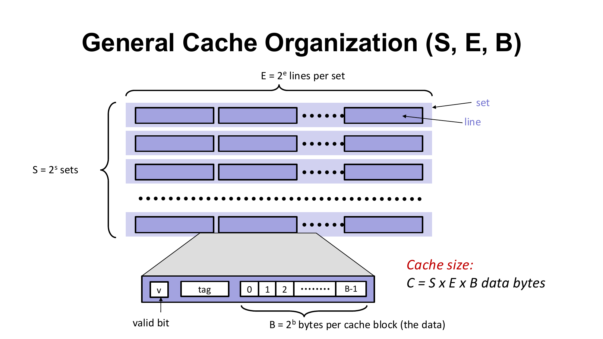
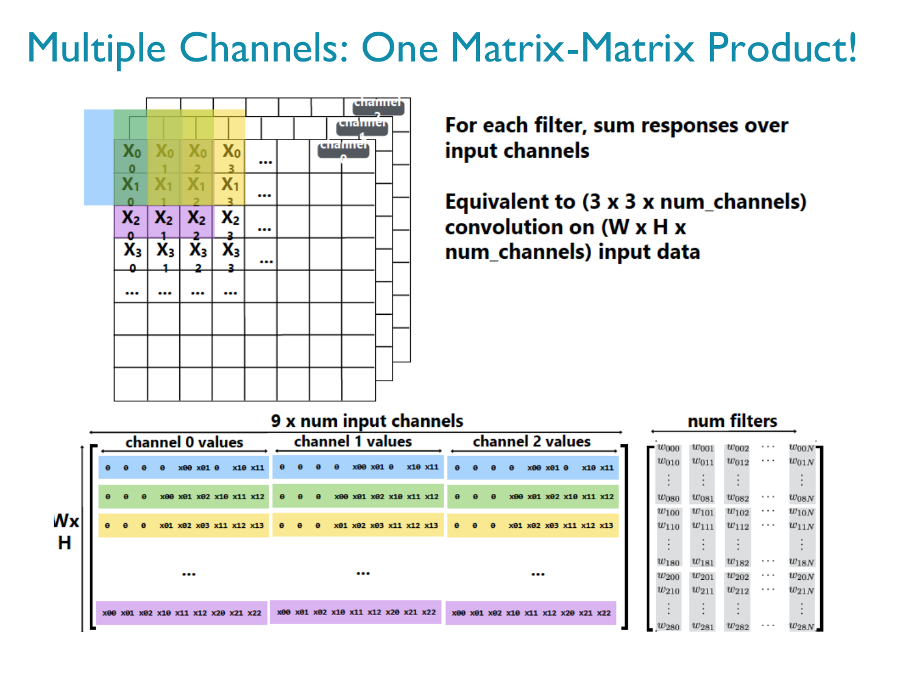

HPC 考前精简笔记：核心直觉 · 必背公式 · 典型例题 · 易错点
专为考前高效记忆设计：去除了重复练习、基础科普与冗长推导，每章只保留「一句话直觉 + 必背公式/代码模板 + 1道典型例题 + 易错点」。英文为主（可直接用于英文作答），下方附中文对照；左侧可一键切换「仅英文」自测或「只看 ★★★ 必考」。
OverviewCourse Exam Map & Master Formula Cheat Sheet 全课考点总览与核心公式速查表
- Format: Week 15, 30% of grade, in English. Style matches Assignment 1: short calculations + 2–3 sentence explanations + reading/debugging code.
- How to study: (1) Memorize the Master Formula Sheet below. (2) Click "只看 ★★★ 必考" on the left to master all core sections first. (3) Switch to "语言：仅英文" to practice writing exam answers in English.考试占总评 30%，第 15 周英文作答（短计算 + 简明解释 + 读改代码）。建议先背本页速查表，再用左侧「只看 ★★★ 必考」过核心章节，最后切「仅英文」自测。
Master Formula Cheat Sheet ★★★全课核心公式速查
| Topic专题 | Must-Know Formulas & Facts必背公式与结论 |
|---|---|
| Ch 1: Supercomputers | \(R_{\text{peak}}=N_{\text{cores}}\times f_{\text{clock}}\times\text{FLOPs/cycle}\) (1 FMA = 2 FLOPs); TOP500 ranks by \(R_{\max}\); \(E=R_{\max}/P\) (GFLOPS/W); \(M=N_{\text{pts}}N_{\text{var}}b\); dense solve \(\approx\tfrac{1}{3}n^3\) FLOPs |
| Ch 2: Speedup & Amdahl | \(S=T_{\text{serial}}/T_{\text{parallel}}\) (best serial baseline!); \(E=S/p\); \(E=1/(1+pr)\) (\(r=T_{\text{ovh}}/T_{\text{serial}}\)); \(S(p)=\frac{1}{f+(1-f)/p}\le\frac{1}{f}\); \(f=\frac{p-S}{S(p-1)}\) |
| Ch 3: Caches & Pipeline | \(C=SEB\); \(m=t+s+b\) (\(s=\log_2 S, b=\log_2 B\)); row-major &a[i][j]=base+(iN+j)w; \(T_{\text{pipe}}=(k+n-1)T_{\text{clk}}\), \(S_{\text{pipe}}=nk/(k+n-1)\) |
| Ch 4–5: Threads & Python | count++ = LOAD/ADD/STORE \(\implies\) private counter + 1 lock per thread (\(A_{\text{match}}=H\) vs \(A_{\text{proc}}=t\)); GIL serializes CPU-bound Python threads (use multiprocessing) |
| Ch 6: CPU Matmul | \(y=Ax\): \(2mn\) FLOPs; \(C=AB\): \(2mnk\) FLOPs; \(\text{GFLOP/s}=\text{FLOPs}/(t_{\text{sec}}\cdot 10^9)\); loop speed: kij/ikj > ijk/jik > jki/kji |
| Ch 7–8: DL & Attention | Conv weights \(=KCRS\); im2col \(\mathbf F_{K\times CRS}\mathbf P_{CRS\times NH'W'}\) (\(\approx RS\times\) memory); Attention \(Z=\operatorname{softmax}(QK^T/\sqrt{d_k})V\) (row-wise softmax); \(QKV\): \(6nd^2\), \(QK^T\) & \(AV\): \(2n^2d_k\) per head |
| Ch 9–10: OpenMP | gcc -fopenmp; before block = shared, inside = private; reduction(op: var); static thread \(=\lfloor i/c\rfloor\bmod p\); guided \(c_k=\max(\lceil R_k/p\rceil, c_{\min})\) |
| Ch 11: GPU & Roofline | \(P_{\text{peak}}=N_{\text{SM}}\cdot n_{\text{core/SM}}\cdot 2\cdot f_{\text{clock}}\); \(\text{AI}=\text{FLOPs}/\text{bytes}\); \(B_m=P_{\text{peak}}/BW\); \(P_{\text{att}}=\min(P_{\text{peak}}, \text{AI}\times BW)\) |
| Ch 12: CUDA | Block \(\le 1024\) (CC \(\ge 2.0\)); \(\text{myID}=bT+t\); \(N_{\text{warp}}=N_{\text{blk}}\lceil T/32\rceil\); \(w=\lfloor t/32\rfloor, \ell=t\bmod 32\); \(\text{Occ}=RW_{\text{blk}}/W_{\max}\) |
| Ch 13–14: GPU Mem & GEMM | Local = thread scope, off-chip; coalesced = 4 sectors (128 B); tile[32][33] avoids bank conflicts; \(t_{\min}=B/BW\); tile \(\text{AI}=\frac{B_M B_N}{2(B_M+B_N)}=T/4\); \(S=4B_K(B_M+B_N)\) B; \(t\ge\max(t_{\text{compute}}, t_{\text{mem}})\) |
| Ch 15: MPI | mpicc / mpiexec -n p; MPI_Init, MPI_Comm_size, MPI_Comm_rank (\(0..p-1\)), MPI_Send (6 args, strlen+1), MPI_Recv (7 args, MAX_STRING, &status), MPI_Finalize |
Parallel Models Comparison ★★★四大并行编程模型对比
| Model模型 | Memory内存模型 | Unit of parallelism并行单位 | Synchronization同步方式 | Typical compile/run编译运行 |
|---|---|---|---|---|
| Pthreads | Shared共享内存 | OS Threads (pthread_t) |
Mutex (pthread_mutex_lock), pthread_join |
gcc ... -lpthread |
| OpenMP | Shared共享内存 | Thread team (#pragma omp) |
critical, reduction, implicit barrier at for |
gcc -fopenmp ... |
| CUDA | Hierarchical (Global/Shared/Reg) | Blocks & Warps (32 threads) | __syncthreads() (block), cudaDeviceSynchronize() (host) |
nvcc ... |
| MPI | Distributed分布式内存 | Processes (rank 0..p-1) |
Explicit messages (MPI_Send / MPI_Recv) |
mpicc ... / mpiexec -n p |
Chapter 1Supercomputer Performance & TOP500 超级计算机性能指标与 TOP500
| Priority | What can be asked考点 | Key formula or fact核心公式 / 结论 |
|---|---|---|
| ★★★ | Peak performance & FLOP/s per core峰值算力与单核算力 | \(R_{\text{peak}}=N_{\text{cores}}\times f_{\text{clock}}\times\text{FLOPs/cycle}\); \(\text{FP/core}=R_{\text{peak}}/N_{\text{cores}}\) |
| ★★★ | \(R_{\max}\), \(R_{\text{peak}}\) & energy efficiency实测排名与能效 | TOP500 ranks by \(R_{\max}\); \(E=R_{\max}/P\) (GFLOPS/W = GFLOP/J) |
| ★★ | Memory & time to solution内存估算与求解时间 | \(M=N_{\text{points}}N_{\text{var}}b\); \(T=W/R_{\text{sust}}\); dense solve \(\approx\tfrac{1}{3}n^3\) flops |
| ★★ | Moore's law摩尔定律 | Transistors double every 1.5 years每 1.5 年晶体管数翻倍 |
Peak performance & FLOP/s per core ★★★峰值性能与单核算力
One-line intuition: Theoretical peak assumes every core and every arithmetic unit does useful FP64 work on every clock tick (1 FMA = 2 FLOPs: one multiply + one add).一句话直觉：理论峰值假设每个核心的每个运算单元在每个时钟周期都在满负荷做双精度浮点运算（1 次 FMA 乘加 = 2 FLOPs）。
\[R_{\text{peak}} = N_{\text{nodes}} \times N_{\text{cores/node}} \times f_{\text{clock}} \times \frac{\text{FLOPs}}{\text{cycle}\cdot\text{core}}\] \[\text{FP per core} = \frac{R_{\text{peak}}}{N_{\text{cores}}}, \qquad \frac{\text{FLOPs}}{\text{cycle}\cdot\text{core}} = \frac{\text{FP per core}}{f_{\text{clock}}}\]
- \(R_{\text{peak}}\) (\(R_{\text{theor}}\)): theoretical peak (FLOP/s, default FP64). :: 理论峰值（默认 FP64 双精度）。
- \(N_{\text{cores}} = N_{\text{nodes}}\times N_{\text{cores/node}}\): total cores (with GPUs, add \(N_{\text{nodes}}\times N_{\text{acc/node}}\times P_{\text{acc}}\)). :: 总核数（若有加速卡需加上加速卡峰值）。
- \(f_{\text{clock}}\): clock rate in Hz (1 GHz = \(10^9\) cycles/s). :: 时钟频率（Hz）。
- Units: k (\(10^3\)), M (\(10^6\)), G (\(10^9\)), T (\(10^{12}\)), P (\(10^{15}\)), E (\(10^{18}\)). :: 数量级单位。
[!EXAMPLE] LineShine peak & reverse lookup (Assignment 1 style) :: 算峰值与反推单核算力 Given: \(13{,}789{,}440\) cores, \(f_{\text{clock}}=1.55\text{ GHz}\), \(64\text{ FMAs/cycle/core}\).
- FLOPs/cycle/core: \(64\times 2 = 128\) FLOPs/cycle.
- Per core: \(128\times 1.55\times 10^9 = 198.4\text{ GFLOP/s}\).
- System \(R_{\text{peak}}\): \(13{,}789{,}440 \times 198.4\text{ GFLOP/s} = 2{,}735.82\text{ PFLOP/s} = 2.736\text{ EFLOP/s}\).
- Reverse (from TOP500 row): \(\text{FP/core} = 2{,}735.82\times 10^{15}/13{,}789{,}440 = 198.4\text{ GFLOP/s}\), then \(198.4/1.55 = 128\text{ FLOPs/cycle}\).已知核数、主频与每周期 FMA 数即可正向求 \(R_{\text{peak}}\)；反过来用 \(R_{\text{peak}}\) 除以核数与主频即可求单核算力与每周期浮点次数。
[!EXAM] Traps :: 易错点
- Forgetting 1 FMA = 2 FLOPs halves the peak. :: 忘记 1 次 FMA = 2 FLOPs 会算少一半。
- On GPU-accelerated machines, TOP500 counts GPU compute units as cores, so \(R_{\text{peak}}/N_{\text{cores}}\) is only an average. :: 含 GPU 的机器会把 GPU 单元算进总核数，此时单核算力只是平均值。
R_max, R_peak & energy efficiency ★★★实测排名与能效
Three performance rates: \(R_{\text{sustained}}\) (whole application, often \(<10\%\) of peak) \(\ll R_{\text{real}}\) (single kernel) \(\ll R_{\text{theor}}\) (\(R_{\text{peak}}\)).三种性能指标：实际应用持续算力 \(R_{\text{sustained}}\)（常低于峰值的 10%）\(\ll\) 单核/单操作实测 \(R_{\text{real}}\) \(\ll\) 理论峰值 \(R_{\text{peak}}\)。
TOP500 ranking: Ranks machines by \(R_{\max}\) (LINPACK benchmark), not \(R_{\text{peak}}\). (June 2026: #1 LineShine \(R_{\max}=2198.40\) PFLOP/s, \(R_{\text{peak}}=2735.82\); #2 El Capitan \(R_{\max}=1809.00\), \(R_{\text{peak}}=2821.10\).)TOP500 按 LINPACK 实测成绩 \(R_{\max}\) 排名，不按 \(R_{\text{peak}}\)。
\[E = \frac{R_{\max}}{P} \quad (\text{in GFLOPS/W} = \text{GFLOP/J})\]
- \(R_{\max}\): LINPACK rate (FLOP/s); \(P\): electrical power (W = J/s; \(1\text{ MW}=10^6\text{ W}\)). :: \(R_{\max}\) 为实测算力，\(P\) 为功耗（瓦）。
[!EXAMPLE] LineShine energy efficiency :: LineShine 能效计算 \(R_{\max}=2{,}198.40\text{ PFLOP/s}\), \(P=42.20\text{ MW}\): \[E = \frac{2{,}198.40\times 10^{15}\text{ FLOP/s}}{42.20\times 10^6\text{ W}} = 52.09\text{ GFLOPS/W}\]用 \(R_{\max}\) 除以功率 \(P\) 即得每瓦算力（注意用 \(R_{\max}\)，不要用 \(R_{\text{peak}}\)）。
Memory, time to solution & Moore's law ★★内存估算、求解时间与摩尔定律
\[M = N_{\text{points}} \times N_{\text{var}} \times b, \qquad T = \frac{W}{R_{\text{sust}}}\]
- \(M\): memory (bytes); \(N_{\text{points}}\): grid points; \(N_{\text{var}}\): variables/point; \(b\): bytes/value (\(b=8\) for
double). :: \(M\) 为字节数，double占 8 字节。 - \(T\): run time (s); \(W\): total FLOPs (dense \(n\times n\) linear solve \(Ax=b\) takes \(\approx \tfrac{1}{3}n^3\) FLOPs); \(R_{\text{sust}}\): sustained rate. :: 稠密线性方程组求解约需 \(\tfrac{1}{3}n^3\) 次浮点运算。
[!EXAMPLE] Dense solve scaling (\(100\text{ MFLOP/s}\)) :: 稠密方程组求解规模效应 At \(R=10^8\text{ FLOP/s}\): for \(n=10^4\), \(W=\tfrac{1}{3}(10^4)^3=3.33\times 10^{11}\) FLOPs \(\Rightarrow T=3{,}333\text{ s}\approx 55.6\text{ min}\). For \(n=10^6\), \(W=3.33\times 10^{17}\Rightarrow T=3.33\times 10^9\text{ s}\approx 105.7\text{ years}\), memory \(=10^{12}\times 8\text{ B}=8\text{ TB}\).问题规模 \(n\) 扩大 10 倍，计算量扩大 1000 倍（\(n^3\)），内存扩大 100 倍（\(n^2\)）。
- Moore's law: Transistors per chip double every 1.5 years (e.g., 12 years = \(12/1.5=8\) doublings = \(2^8=256\times\)). :: 摩尔定律：每 1.5 年芯片晶体管数翻倍。
Terms to recognise ★重要术语速记
| Term术语 | What to know核心记忆点 |
|---|---|
| ExascaleE 级超算 | \(\ge 10^{18}\) FLOP/s (\(1\text{ EFLOP/s}=1000\text{ PFLOP/s}\)).每秒百亿亿次浮点运算。 |
| Supercomputer vs Cloud超算 vs 云计算 | HPC: few big jobs, custom low-latency network, static scheduling; Cloud: many small tasks, commodity hardware, dynamic allocation.超算跑大作业、低延迟定制网络、静态调度；云跑小任务、通用硬件、动态分配。 |
| Gordon Bell Prize戈登贝尔奖 | Annual award for real applications; gained \(10^4\times\) in 13 years via concurrency, beating Moore's law.实际应用最高奖，靠并发突破摩尔定律。 |
| Saudi & UAE (TOP500)中东代表系统 | Shaheen III - GPU (KAUST, #22, 122.80 PFLOP/s); SuperPOD (Core42, #46, 55.81 PFLOP/s).了解 KAUST 与 Core42 上榜机器。 |
Chapter 2Speedup, Efficiency & Amdahl's Law 加速比、效率与 Amdahl 定律
| Priority | What can be asked考点 | Key formula or fact核心公式 / 结论 |
|---|---|---|
| ★★★ | Speedup & efficiency加速比与效率 | \(S=T_{\text{serial}}/T_{\text{parallel}}\); \(E=S/p\); baseline = best serial program |
| ★★★ | Overhead & problem size开销与问题规模 | \(E=1/(1+p\,T_{\text{overhead}}/T_{\text{serial}})\); best \(p\) minimizes \(T_p\) |
| ★★★ | Amdahl's law & serial fractionAmdahl 定律 | \(S=1/(f+(1-f)/p)\le 1/f\); \(f=(p-S)/(S(p-1))\) |
Speedup & efficiency ★★★加速比与效率
One-line intuition: Speedup \(S\) measures how many times faster the parallel code runs; efficiency \(E\) measures what fraction of the \(p\) cores' ideal speedup is actually achieved (\(E=1\) is ideal linear speedup).一句话直觉：加速比 \(S\) 是并行快了多少倍；效率 \(E\) 是每个核发挥了理想性能的几成（\(E=1\) 为理想线性加速）。
\[S = \frac{T_{\text{serial}}}{T_{\text{parallel}}}, \qquad E = \frac{S}{p} = \frac{T_{\text{serial}}}{p\,T_{\text{parallel}}}\]
- \(T_{\text{serial}}\): run time of the best serial program; \(T_{\text{parallel}}\): parallel run time on \(p\) cores. :: \(T_{\text{serial}}\) 必须是最优串行程序时间。
- Linear speedup: \(T_{\text{parallel}}=T_{\text{serial}}/p \iff S=p,\, E=1\). :: 线性加速即 \(S=p, E=1\)。
[!EXAMPLE] Computing \(S\) and \(E\) :: 加速比与效率计算 \(T_{\text{serial}}=96\text{ s}\). On \(p=16\) cores, \(T_{\text{parallel}}=8\text{ s}\): \[S = \frac{96}{8} = 12.0, \qquad E = \frac{12.0}{16} = 0.75\ (75\%)\]先用串行时间除以并行时间得 \(S=12\)，再除以核数 16 得效率 75%。
[!EXAM] Traps :: 易错点
- Never use the parallel program on 1 core as \(T_{\text{serial}}\): it carries parallel overhead and artificially inflates \(S\). :: 不能用“并行程序跑在 1 核”当基准，否则会虚高加速比。
- Exam sentence: "Speedup is \(S=T_{\text{serial}}/T_{\text{parallel}}\) where \(T_{\text{serial}}\) is the best serial run time; efficiency is \(E=S/p\), with \(E=1\) for linear speedup." :: 英文答题标准句式。
Overhead & problem size ★★★并行开销与问题规模
One-line intuition: Parallelism adds extra cost \(T_{\text{overhead}}\) (communication, synchronization, load imbalance); efficiency rises with problem size \(n\) only if \(T_{\text{overhead}}\) grows more slowly than \(T_{\text{serial}}\).一句话直觉：并行会引入额外开销（通信、同步、负载不均）；只有当开销随问题规模 \(n\) 的增长速度慢于串行时间时，增大问题规模才能提高效率。
\[T_{\text{parallel}} = \frac{T_{\text{serial}}}{p} + T_{\text{overhead}}, \qquad E = \frac{1}{1 + p\,r}, \quad r = \frac{T_{\text{overhead}}}{T_{\text{serial}}}\]
- \(r\): overhead ratio. Fixed \(n\), growing \(p \implies E\) falls. Fixed \(p\), growing \(n \implies E\) rises iff \(r(n)\) shrinks. :: \(r\) 为开销比。固定 \(p\) 增大 \(n\) 时，若开销增长慢于串行时间，则 \(r\) 减小、\(E\) 上升。
[!EXAMPLE] Assignment 1 style: finding best \(p\) & scaling with \(n\) :: 最优核数与规模分析 Let \(T_1=100\text{ s}\), \(f=0.02\), \(T_p = 2 + 98/p + 0.25\log_2 p\):
- At \(p=256\): \(T_{256}=2+0.3828+2.00=4.3828\text{ s}\) (\(S=22.82\)).
- At \(p=512\): \(T_{512}=2+0.1914+2.25=4.4414\text{ s}\) (\(S=22.52\)).
- Speedup peaks at \(p=256\) because beyond 256, halving \(98/p\) saves less than the \(+0.25\text{ s}\) added by \(0.25\log_2 p\).核数超过 256 后，计算时间减少量小于通信开销 \(\log_2 p\) 的增加量，因此加速比先升后降。
Amdahl's law ★★★Amdahl 定律
One-line intuition: For a fixed problem size, the unparallelizable serial fraction \(f\) sets a hard ceiling \(1/f\) on speedup, even with infinite cores.一句话直觉：固定问题规模下，无法并行的串行比例 \(f\) 决定了加速比上限为 \(1/f\)，核数再多也突破不了。
\[S(p) = \frac{1}{f + \dfrac{1-f}{p}} = \frac{1}{(1-\alpha) + \dfrac{\alpha}{p}} \xrightarrow{p\to\infty} \frac{1}{f}\] \[f = \frac{1/S - 1/p}{1 - 1/p} = \frac{p - S}{S(p - 1)}\]
- \(f\): serial fraction; \(\alpha = 1-f\): parallelizable fraction (both in \([0,1]\)). :: \(f\) 为串行比例，\(\alpha\) 为可并行比例。
[!EXAMPLE] Limit & solving for \(f\) :: 上限与反推 \(f\)
- If \(\alpha=95\%\) (\(f=0.05\)) and \(p=20\): \(S = 1/(0.05 + 0.95/20) = 10.26\), limit \(S_\infty = 1/0.05 = 20\).
- If \(S=6.4\) is measured on \(p=16\) cores: \(f = (16-6.4)/(6.4\times 15) = 0.1\), so limit is \(1/0.1 = 10\).注意先分清题目给的是串行比例 \(f\) 还是可并行比例 \(\alpha\)。
[!EXAM] Traps :: 易错点
- Check whether the given percentage is serial (\(f\)) or parallelizable (\(\alpha\)): \(\alpha=0.9 \implies f=0.1 \implies S_\infty=10\). :: 看清题目给的是串行比例还是可并行比例。
- Amdahl's law assumes fixed problem size and zero parallel overhead. :: 假设问题规模固定且无并行开销。
Chapter 3Architecture, Caches & Locality 体系结构、缓存与局部性
| Priority | What can be asked考点 | Key formula or fact核心公式 / 结论 |
|---|---|---|
| ★★★ | Cache size, address split & direct-mapped trace缓存大小、地址划分与命中追踪 | \(C=S\,E\,B\); \(m=t+s+b\); hit = valid bit 1 & tag match |
| ★★★ | Row-wise vs column-wise locality行遍历 vs 列遍历局部性 | C is row-major; row-wise reads adjacent bytes (\(w\) vs \(Nw\)) |
| ★★ | Flynn's taxonomyFlynn 分类 | Count instruction/data streams: CPU=MIMD, GPU=SIMD/SIMT, Cluster=dist. MIMD |
| ★★ | Pipelining流水线周期与加速比 | \(k+n-1\) cycles vs \(nk\) cycles; \(S=nk/(k+n-1)\to k\) |
Cache organization & direct-mapped lookup ★★★缓存组织与直接映射查找
One-line intuition: A cache stores copies of recently used memory blocks in fast SRAM; each memory address splits from high to low bits into Tag | Set Index | Block Offset.一句话直觉：缓存把最近访问的内存块保存在高速 SRAM 中；地址从高位到低位依次拆分为：标记（Tag）| 组索引（Set Index）| 块内偏移（Block Offset）。

\[C = S \times E \times B, \qquad m = t + s + b, \qquad s = \log_2 S, \quad b = \log_2 B\] \[\text{block} = \lfloor a / B \rfloor, \quad \text{index} = \text{block} \bmod S, \quad \text{tag} = \lfloor \text{block} / S \rfloor, \quad \text{offset} = a \bmod B\]
- \(C\): data capacity (bytes); \(S\): sets; \(E\): lines/set (\(E=1\) is direct mapped); \(B\): block size (bytes). :: \(E=1\) 为直接映射。
- \(m\): address width (bits); \(t, s, b\): tag, set-index, block-offset bit widths. :: \(t=m-s-b\)。
- Hit condition:
valid == 1andline.tag == addr.tag. :: 命中条件：有效位为 1 且标记匹配。
[!EXAMPLE] Direct-mapped trace (\(S=4\), \(E=1\), \(B=8\text{ B}\)) :: 直接映射命中追踪
Byte addresses: 0, 4, 8, 32, 0, 36, 8, 40. Here \(\text{block}=\lfloor a/8\rfloor\), \(\text{set}=\text{block}\bmod 4\), \(\text{tag}=\lfloor\text{block}/4\rfloor\).
| # | Addr | Block | Set | Tag | Result |
|---|---|---|---|---|---|
| 1 | 0 | 0 | 0 | 0 | miss (load blk 0) |
| 2 | 4 | 0 | 0 | 0 | hit |
| 3 | 8 | 1 | 1 | 0 | miss (load blk 1) |
| 4 | 32 | 4 | 0 | 1 | miss (evicts blk 0) |
| 5 | 0 | 0 | 0 | 0 | miss (evicts blk 4) |
| 6 | 36 | 4 | 0 | 1 | miss (evicts blk 0) |
| 7 | 8 | 1 | 1 | 0 | hit |
| 8 | 40 | 5 | 1 | 1 | miss (evicts blk 1) |
Result: 2 hits, 6 misses (blocks 0 and 4 conflict at set 0).先算块号 \(\lfloor a/B\rfloor\)，再对 \(S\) 取模得组号、整除 \(S\) 得标记；同组不同标记会相互逐出（冲突未命中）。
[!EXAM] Traps :: 易错点
- \(C=S\cdot E\cdot B\) counts data bytes only (ignore valid/tag bits). :: 容量只算数据字节，不算标记位和有效位。
- Offset width \(b=\log_2 B\) depends on block size \(B\), not on
int/doublesize. :: \(b\) 由块大小 \(B\) 决定，与数据类型无关。
Locality: row-wise vs column-wise (Assignment 1) ★★★空间局部性（行遍历 vs 列遍历）
One-line intuition: C stores 2-D arrays in row-major order (&a[i][j] = base + (i*N + j)*w), so row-wise inner loops (for j) read consecutive addresses and use every word in a fetched cache block.一句话直觉：C 语言按行主序存储二维数组，行优先遍历（内层循环 j）访问相邻地址，能充分利用整个缓存块；列优先遍历（内层 i）每次跳跃 \(Nw\) 字节，空间局部性差。
// Good spatial locality: stride = w (e.g. 4 B for int)
for (i = 0; i < M; i++) for (j = 0; j < N; j++) sum += a[i][j];
// Poor spatial locality: stride = N*w (e.g. 400 B for N=100) -> 1 element per block if N*w >= B
for (j = 0; j < N; j++) for (i = 0; i < M; i++) sum += a[i][j];
"C stores arrays in row-major order, so the row-wise loop reads consecutive addresses and uses all elements of each fetched block. The column-wise loop jumps \(Nw\) bytes per access and uses only one element per fetched block, so its spatial locality is worse."
Flynn's taxonomy ★★Flynn 体系结构分类
Rule: Count instruction streams and data streams (not cores or threads).分类依据是指令流与数据流的数量，而非核数或线程数。
| Class类别 | Streams (I / D) | Meaning & example含义与典型代表 |
|---|---|---|
| SISD | 1 / 1 | Scalar single-core CPU单核标量处理器 |
| SIMD | 1 / many | Lockstep execution on multiple data: vector unit, GPU (SIMT model)锁步执行：向量单元、GPU |
| MISD | many / 1 | Fault-tolerant voting; course also places systolic arrays / TPU here容错表决；脉动阵列 / TPU |
| MIMD | many / many | Independent instruction streams: multicore CPU (shared mem), cluster (distributed mem)多核 CPU、集群 |
- A GPU runs thousands of threads, not MIMD: the 32 threads in a warp share one instruction stream in lockstep \(\implies\) SIMD quadrant (NVIDIA calls it SIMT). :: GPU 属于 SIMD 象限（SIMT 模型），不是 MIMD。
Pipelining ★★指令流水线
One-line intuition: Overlapping \(k\) instruction stages (IF, RD, EX, WB) improves throughput (nearly 1 instruction/cycle), not single-instruction latency (\(\ge k\) cycles).一句话直觉：流水线让 \(k\) 个阶段重叠执行，提高的是吞吐率（接近每周期 1 条指令），不能降低单条指令的延迟。
\[T_{\text{pipe}} = (k + n - 1)\,T_{\text{clock}}, \qquad T_{\text{no pipe}} = nk\,T_{\text{clock}}, \qquad S_{\text{pipe}} = \frac{nk}{k + n - 1} \xrightarrow{n\to\infty} k\]
- \(k\): pipeline stages; \(n\): instructions; \(\text{CPI} = (k+n-1)/n \to 1\); \(E_{\text{pipe}} = S_{\text{pipe}}/k\). :: \(k\) 为级数，\(n\) 为指令数。
[!EXAMPLE] 5-stage pipeline, \(n=100\) instructions :: 流水线计算 With pipeline: \(5+100-1 = 104\) cycles; without: \(100\times 5 = 500\) cycles. \(S_{\text{pipe}} = 500/104 = 4.81\), \(\text{CPI}=1.04\), \(E_{\text{pipe}}=4.81/5=0.96\).流水线需要 \(k-1\) 个周期填满，因此加速比略小于 \(k\)。
Terms to recognise ★术语速记
| Term术语 | What to know核心记忆点 |
|---|---|
| Von Neumann & ILP冯·诺依曼与指令级并行 | Fetch–decode–execute cycle; superscalar issues \(>1\) independent instruction/cycle from one stream.取指-译码-执行；超标量从单指令流并发发射多条指令。 |
| UMA vs NUMA一致 vs 非一致内存访问 | UMA: equal access time to all memory; NUMA: local socket memory is faster than remote socket.UMA 各核访存时间相同；NUMA 访问本地内存快于远端内存。 |
Chapter 4Threads, Race Conditions & Pthreads 线程、竞争条件与 Pthreads
| Priority | What can be asked考点 | Key formula or fact核心公式 / 结论 |
|---|---|---|
| ★★★ | Race condition, lost update & mutex竞争条件、丢失更新与互斥锁 | count++ = LOAD, ADD, STORE; mutex fixes correctness but slows down (\(S<1\)); fix = private counter |
| ★★★ | Pthreads API & skeletonPthreads 接口与模板 | pthread_create(&h, NULL, f, (void*)rank), pthread_join(h, NULL); compile with -lpthread |
| ★★ | Block partition块划分 | \(b=\lceil N/t\rceil\), \(\text{start}_r=rb\), \(\text{end}_r=\min(\text{start}_r+b,N)\) |
| ★★ | Process vs thread进程 vs 线程 | Threads share code, globals, heap, files; own stack, registers, PC; ~10K vs ~20K cycles |
Race conditions, mutexes & private counters ★★★竞争条件、互斥锁与私有计数器
One-line intuition: count++ is a 3-step read–modify–write (LOAD, ADD, STORE); interleaving two threads overwrites one update (lost update), while locking every increment serializes threads and makes it slower than serial.一句话直觉：count++ 包含“读-改-写”三步，多线程交错会导致丢失更新；每次自增都加锁会因锁开销和串行化比单线程更慢，正确高效的方法是先用私有变量累加，最后加锁合并一次。

\[\text{slowdown} = \frac{T_t}{T_{\text{serial}}} = \frac{1}{S}\]
- \(T_t\): parallel time with \(t\) threads; \(S < 1\) (\(\text{slowdown}>1\)) means slower than serial. :: \(S<1\) 表示并行比串行更慢。
- Why mutex-per-match is slower (\(S<1\)): (1) Mutex overhead (lock/unlock library calls cost more than
count++), (2) Serialization (only 1 thread in critical section), (3) Lock contention (threads wait for the lock). :: 锁每命中一次更慢的三大原因：锁调用开销、临界区串行化、锁竞争等待。 - Fast fix (private counter): Each thread counts into a stack-local
local = 0inside the loop, then locks once after the loop to docount += local. Lock calls drop from \(H\) (matches) to \(t\) (threads). :: 私有计数器把加锁次数从命中次数 \(H\) 降为线程数 \(t\)。
count = 5 lost update & speedup comparison丢失更新追踪与性能对比- Interleaving (
count=5): A LOADs 5, B LOADs 5, A ADDs (6), B ADDs (6), A STOREs 6, B STOREs 6 \(\implies\) finalcount = 6(one increment lost!). - count3s timings (\(T_{\text{serial}}=0.4527\text{ s}\)): Mutex-per-3 at \(t=1\) takes \(2.1289\text{ s}\) (\(S=0.213\), slowdown \(4.70\times\)); at \(t=8\) takes \(5.9804\text{ s}\) (\(S=0.076\), slowdown \(13.21\times\)).交错执行导致两次自增只加了 1；全程加锁即使 1 个线程也比串行慢 4.7 倍。
[!EXAM] Traps :: 易错点
- A mutex only protects a shared variable if every access uses the same mutex. :: 所有线程必须使用同一把锁。
- Even on 1 core, time-slicing can interleave LOAD/ADD/STORE and cause a race. :: 单核时间片轮转也会发生竞争。
The Pthreads API ★★★Pthreads 编程接口
Key calls & skeleton: Create all threads in loop 1, join all threads in loop 2 (never join inside the create loop!).核心模板：第一个循环创建所有线程，第二个循环统一 join（切勿在创建循环里直接 join，否则退化为串行）。
#include <pthread.h>
// Compile: gcc -g -Wall -o pth_hello pth_hello.c -lpthread
void *Hello(void *rank) { // MUST take void* and return void*
long my_rank = (long) rank; // cast back via long for 64-bit safety
printf("Hello from thread %ld of %d\n", my_rank, thread_count);
return NULL;
}
// In main:
for (long t = 0; t < thread_count; t++)
pthread_create(&thread_handles[t], NULL, Hello, (void*) t); // &handle, fn ptr, arg
for (long t = 0; t < thread_count; t++)
pthread_join(thread_handles[t], NULL); // handle BY VALUE
pthread_createtakes&handle(pointer);pthread_jointakeshandle(by value). ::create传指针&h，join传值h。- Pass function name
f, neverf(&x)(which callsfimmediately inmain). :: 传函数名f，不要写f(&x)。 - Start routine signature must be
void* f(void*). :: 线程函数签名必须是void* f(void*)。
Block partition ★★均匀块划分
\[b = \left\lceil \frac{N}{t} \right\rceil, \qquad \text{start}_r = r\,b, \qquad \text{end}_r = \min(\text{start}_r + b,\; N) \quad (r=0,\dots,t-1)\]
- Thread \(r\) processes half-open interval \([\text{start}_r, \text{end}_r)\). :: 线程 \(r\) 处理半开区间 \([\text{start}_r, \text{end}_r)\)。
[!EXAMPLE] \(N=1000\), \(t=12\) :: 不整除时的划分
Using integer division 1000/12 = 83 skips the last \(1000 \bmod 12 = 4\) elements (996..999).
With \(b=\lceil 1000/12\rceil = 84\): thread 10 gets \([840, 924)\), thread 11 gets \([924, \min(1008, 1000)) = [924, 1000)\).向下取整会漏掉末尾余数元素；向上取整并用 min 截断可覆盖全部元素。
Processes vs threads ★★进程 vs 线程
| Item对比项 | Process进程 | Thread (inside one process)线程 |
|---|---|---|
| Memory / Address space内存空间 | Private (fork() copies address space)独立地址空间 |
Shared: code, globals/static, heap (malloc), open files; Private: stack (locals), registers, PC, TID共享代码/全局/堆/文件；私有栈/寄存器/PC |
| Creation cost (Linux)创建开销 | ~20K cycles约 20K 周期 | ~10K cycles or less约 10K 周期或更少 |
| Communication通信方式 | Explicit (IPC / shared memory)显式通信 | Direct read/write of shared vars (needs sync)直接读写共享变量（需同步） |
- A buffer from
malloclives on the shared heap (only the local pointer variablebufis on the thread's private stack). ::malloc分配的堆内存是所有线程共享的，只有局部指针变量在私有栈上。
Chapter 5Parallel Python: Processes, Threads & the GIL Python 并行：进程、线程与 GIL
| Priority | What can be asked考点 | Key formula or fact核心公式 / 结论 |
|---|---|---|
| ★★★ | GIL: threads vs processesGIL 与选型 | GIL lets 1 thread run Python bytecode at a time; use threading for I/O, multiprocessing for CPU |
| ★★★ | Shared state & lost update共享状态与丢失更新 | mp.Value is private-by-default unless passed; count.value += 1 is non-atomic (LOAD/ADD/STORE) |
| ★★★ | Lock acquisitions加锁次数对比 | Per-match \(A_{\text{match}}=H\) vs per-process \(A_{\text{proc}}=t\); ratio \(=H/t\) |
| ★★ | Spawn-safe skeleton多进程程序结构 | Importable worker; if __name__ == "__main__":; create \(\to\) start \(\to\) join \(\to\) read |
The GIL: threads vs processes ★★★全局解释器锁（GIL）
One-line intuition: The GIL allows only one thread per Python process to execute Python instructions at a time — so threads give concurrency (great for I/O waiting, where the GIL is released) but no CPU parallelism (use multiprocessing, where each process has its own interpreter and GIL).一句话直觉：GIL 限制同一进程内同一时刻只能有一个线程执行 Python 字节码——因此线程适合 I/O 密集型（等待时释放 GIL，可重叠等待），CPU 密集型必须用多进程 multiprocessing。
- CPU-bound: 2 threads take turns on the GIL \(\implies S \approx 1\) (plus switching overhead). Use
multiprocessing. :: 计算密集型用多进程。 - I/O-bound: Threads release the GIL during
read/write/recv/time.sleep\(\implies\) waits overlap (e.g. 6 web fetches: \(3.31\text{ s} \to 0.51\text{ s}\), \(S=6.5\)). Usethreading. :: I/O 密集型用多线程。
- The GIL protects the interpreter, not your shared data (it does not make
x += 1safe), and it is not shared across processes. :: GIL 不保护用户共享数据，也不跨进程共享。 - Start all threads/processes first, then
join()all of them;join()inside the start loop makes execution sequential. Also writeargs=(url,)(trailing comma for 1-tuple!). :: 先全部start()再全部join()；单元素元组必须加逗号(url,)。
Shared state & lock acquisitions in multiprocessing ★★★多进程共享状态与锁开销
One-line intuition: Child processes have private memory (changes to normal variables stay in the child). Shared mp.Value("i", 0) still loses updates on count.value += 1 unless protected by with count.get_lock():.一句话直觉：子进程默认拥有独立内存拷贝；即使使用 mp.Value，count.value += 1 仍是“读-改-写”三步，必须用 with count.get_lock(): 保护；最佳实践是局部累加后每个进程只加锁合并一次。
\[A_{\text{match}} = H, \qquad A_{\text{proc}} = t, \qquad \frac{A_{\text{match}}}{A_{\text{proc}}} = \frac{H}{t}\]
- \(H\): total increments (matches); \(t\): number of processes. :: \(H\) 为命中次数，\(t\) 为进程数。
def count_block_reduced(data, start, stop, count):
local = 0
for i in range(start, stop):
if data[i] == 3:
local += 1 # private: no lock needed
with count.get_lock(): # lock ONCE per process (t times total)
count.value += local
\(N=4\times 10^6\) elements, \(5\%\) are 3s (\(H=200{,}000\)), \(t=8\) processes:
- Lock per match: \(A_{\text{match}} = 200{,}000\).
- Lock per process: \(A_{\text{proc}} = 8\).
- Reduction factor: \(200{,}000 / 8 = 25{,}000\times\) fewer lock acquisitions.局部累加把加锁次数从 20 万次降到 8 次，减少 25,000 倍。
[!EXAM] Traps :: 易错点
- A bare
count.value += 1onmp.Valueis not atomic even thoughValuehas a built-in lock; you must explicitly writewith count.get_lock():. ::mp.Value自带锁但不会自动加锁，必须显式用with count.get_lock():。 - Forgetting the lock on the final
count.value += localstill races! :: 最后合并local时同样必须加锁。
Program skeleton & life cycle ★★多进程程序骨架
Life cycle (in order): create (mp.Process(target=f, args=...)) \(\to\) start (p.start()) \(\to\) join (p.join()) \(\to\) read result.
Worker functions must be top-level (importable), and process creation must sit under if __name__ == "__main__":.生命周期：创建 \(\to\) start() \(\to\) join() \(\to\) 读结果；工作函数需在顶层可导入，进程创建必须放在 if __name__ == "__main__": 保护块内。
Chapter 6Matrix Products on the CPU CPU 上的矩阵乘法
| Priority | What can be asked考点 | Key formula or fact核心公式 / 结论 |
|---|---|---|
| ★★★ | FLOPs & GFLOP/s运算量与算力 | \(y=Ax\): \(2mn\); \(C=AB\): \(2mnk\) (\(2n^3\)); \(\text{GFLOP/s}=\text{FLOPs}/(t\cdot 10^9)\) |
| ★★★ | Pthreads mat-vec (sub, timings)Pthreads 矩阵向量乘 |
Row-block split \(m_{\text{loc}}=m/p\); sub++ avoids i*n+j; parallel time = slowest thread |
| ★★★ | Loop order (\(C=AB\))循环顺序与访存 | Fastest: kij/ikj (2 loads, 1 store); middle: ijk/jik (2, 0); slowest: jki/kji (2, 1) |
| ★★ | Pthreads mat-matPthreads 矩阵乘 | Splitting \(k\) races on c[i][j]; private sum cuts locks by \(n/p\) |
FLOP counts & GFLOP/s ★★★浮点运算数与 GFLOP/s
One-line intuition: Every term \(a_{ij}x_j\) or \(a_{ik}b_{kj}\) does 1 multiply + 1 add = 2 FLOPs; divide total FLOPs by \((t_{\text{sec}} \times 10^9)\) to get GFLOP/s.一句话直觉：每次乘加占 2 个 FLOP；总 FLOP 数除以（秒数 \(\times 10^9\)）即为 GFLOP/s。
\[\text{FLOPs}_{y=Ax} = 2mn, \qquad \text{FLOPs}_{C=AB} = 2mnk\ (2n^3\text{ if square}), \qquad \text{GFLOP/s} = \frac{\text{FLOPs}}{t\cdot 10^9}\]
- \(A\) is \(m\times n\) (for \(Ax\)) or \(m\times k\) and \(B\) is \(k\times n\) (for \(AB\)); \(t\): measured time in seconds. :: 注意时间 \(t\) 必须换算成秒。
[!EXAMPLE] Mat-vec rate :: 矩阵向量乘速率计算 \(m=n=2000\): \(\text{FLOPs}=2\cdot 2000\cdot 2000 = 8\times 10^6\). If \(t = 14.07\text{ ms} = 0.01407\text{ s}\): \[\text{GFLOP/s} = \frac{8\times 10^6}{0.01407\times 10^9} = 0.568\text{ GFLOP/s}\]先算总 FLOPs，再把毫秒换算成秒代入公式。
Pthreads matrix-vector product (Assignment 1) ★★★Pthreads 矩阵向量乘法
One-line intuition: Split the \(m\) rows evenly across \(p\) threads (\(m_{\text{loc}}=m/p\)); threads write disjoint y[i] (no lock needed), and sub = my_first_row * n with sub++ avoids i*n+j multiplication in the inner loop.一句话直觉：按行分块，各线程写不同的 y[i] 无需加锁；sub 预先算好起始偏移后只需自增，省去内层 i*n+j 计算。
\[m_{\text{loc}} = \frac{m}{p}, \qquad r_{\text{first}}(q) = q\,m_{\text{loc}}, \qquad r_{\text{last}}(q) = (q+1)\,m_{\text{loc}} - 1\]
- \(q\in\{0,\dots,p-1\}\): thread rank; initial
sub\(= r_{\text{first}}(q)\cdot n\); finalsub\(= (r_{\text{last}}(q)+1)\cdot n\). ::sub初始为首行首元素下标，结束时指向下一块首元素。
- Reading timings: Parallel loop time \(T_p\) = slowest thread (
maxover threads, sincepthread_joinwaits for all). Job timerealincludes serial I/O & thread setup (e.g. \(p=4\to 8\): loop drops \(7.0\to 3.7\text{ ms}\), butrealstays \(65\to 63\text{ ms}\) due to ~58 ms serial work). :: 并行时间取最慢线程时间；real总时间包含串行读写和线程创建开销。
sub 与行范围追踪\(m_{\text{loc}}=2\). Thread 1 (\(q=1\)): my_first_row = 2, my_last_row = 3 (exclusive 4), initial sub = 2*4 = 8, final sub = 16 (reads A[8..15]).线程 1 处理第 2、3 行，对应一维数组 A[8..15]。
Loop order for \(C = AB\) ★★★矩阵乘法的六种循环顺序
One-line intuition: All 6 loop orders do the exact same \(2n^3\) FLOPs, but differ hugely in speed (up to \(33\times\) at \(n=700\)) due to cache locality in the innermost loop.一句话直觉：六种循环顺序的运算量都是 \(2n^3\)，但最内层循环的内存访问步长不同导致缓存局部性差异巨大（\(n=700\) 时最快与最慢相差约 33 倍）。
| Orders循环顺序 | Inner loop最内层 | Loads / Stores per iter每轮读/写次数 | Speed rank速度排名 | Why原因 |
|---|---|---|---|---|
kij, ikj |
\(j\) | 2 loads, 1 store | Fastest (1st)最快 | Stride-1 row-major access on both B[k][j] and C[i][j]连续步长 1 访问 |
ijk, jik |
\(k\) | 2 loads, 0 stores | Middle (2nd)中等 | A[i][k] stride-1, B[k][j] stride-\(n\); sum in registerB 按列跳跃 |
jki, kji |
\(i\) | 2 loads, 1 store | Slowest (3rd)最慢 | Stride-\(n\) column access on both A[i][k] and C[i][j]两个矩阵都按列跳跃 |
- Same FLOPs \(\neq\) same run time: memory access pattern dominates. :: FLOPs 相同不代表耗时相同。
kij/ikjandjki/kjiusec[i][j] += ..., socmust be initialized to 0. ::+=累加前c必须清零。
Pthreads matrix-matrix product ★★Pthreads 矩阵乘的锁优化
Splitting the \(k\) loop across \(p\) threads causes every thread to write to the same c[i][j] (race condition).
- Lock per update: \(n^3\) critical sections \(\implies\) serialized, \(21\times\) slower than serial (\(93.0\text{ s}\) vs \(4.38\text{ s}\)).
- Private partial sum: Accumulate in
thread_private_tmp, lock once per(i, j)\(\implies\) \(p\,n^2\) critical sections (\(n/p\) fewer locks, \(1.54\text{ s}\)).按求和维度 \(k\) 划分会导致所有线程写同一个c[i][j]；在k循环内用私有变量累加后再加锁合并，可将加锁次数从 \(n^3\) 降为 \(p n^2\)（减少 \(n/p\) 倍）。
Terms to recognise ★术语速记
| Term术语 | What to know核心记忆点 |
|---|---|
| Row-major order行主序 | 2-D entry \(a_{ij}\) in \(m\times n\) array is at flat index \(i\cdot n + j\).二维数组按行连续存放。 |
| Profiling性能剖析 | Timing each phase to find the hotspot worth parallelizing (e.g. matmul = 98.4% of run).测量各阶段耗时以定位热点。 |
Chapter 7Matrix Products in Deep Learning 深度学习中的矩阵乘法
| Priority | What can be asked考点 | Key formula or fact核心公式 / 结论 |
|---|---|---|
| ★★★ | Conv layer weights & output卷积层参数量与输出 | \(\#\text{weights}=KCRS\) (+ \(K\) biases), independent of \(H, W, N\) |
| ★★★ | im2col shapes, FLOPs & memoryim2col 形状、运算量与内存 | \(\mathbf Y_{K\times NH'W'}=\mathbf F_{K\times CRS}\mathbf P_{CRS\times NH'W'}\); \(2KCRSNH'W'\) FLOPs; \(\mathbf P\) is \(\approx RS\times\) input |
| ★★ | Backprop, SGD & minibatch GEMMs反向传播、SGD 与小批量 | 3 GEMMs/layer: \(\mathbf W^T\mathbf X\), \(\mathbf W\boldsymbol\Delta\), \(\mathbf X\boldsymbol\Delta^T\), each \(2d_\ell d_{\ell-1}k\) FLOPs |
| ★★ | Model compression模型压缩 | Weight sharing: \(n\lceil\lg k\rceil + kb\) bits; pruning + quantization + Huffman |
Convolution layers & weights ★★★卷积层与参数量
One-line intuition: A conv layer slides \(K\) filters of size \(R\times S\times C\) across the image; each output value is a dot product (cross-correlation, not flipped) plus bias, and weights are shared across all positions.一句话直觉：卷积层用 \(K\) 个大小为 \(R\times S\times C\) 的滤波器在图像上滑动做点积（互相关，不翻转）并加偏置；由于权重共享，参数量与图像高宽 \(H, W\) 及批大小 \(N\) 无关。
\[\#\text{weights} = K\,C\,R\,S \qquad (\text{plus } K \text{ biases})\]
- \(K\): number of filters; \(C\): input channels; \(R\times S\): filter height \(\times\) width. :: \(K\) 个滤波器，\(C\) 个输入通道，核尺寸 \(R\times S\)。
- ReLU: \(\max(0, z)\) (keeps shape). Max pooling (\(2\times 2\)): keeps max of each \(2\times 2\) block, shrinking \(H\times W\) to \((H/2)\times(W/2)\). :: ReLU 置负为 0；\(2\times 2\) 最大池化使高宽各减半。
[!EXAMPLE] Weight count :: 参数量计算 \(K=64\) filters of \(3\times 3\) on \(C=3\) RGB channels: \[\#\text{weights} = 64\times 3\times 3\times 3 = 1{,}728\text{ weights} + 64\text{ biases} = 1{,}792\text{ parameters}\]64 个 \(3\times 3\times 3\) 滤波器共有 1,728 个权重和 64 个偏置。
Convolution as a matrix product (im2col) ★★★卷积转矩阵乘法（im2col）
One-line intuition: im2col copies every \(R\times S\times C\) input window into a column of patch matrix \(\mathbf P\) and packs each filter as a row of \(\mathbf F\), turning a 7-loop convolution into one GEMM at the cost of \(\approx RS\times\) input memory.一句话直觉：im2col 把每个 \(R\times S\times C\) 窗口拉成矩阵 \(\mathbf P\) 的一列、每个滤波器拉成 \(\mathbf F\) 的一行，把 7 层循环变成一次高效 GEMM，代价是输入显存膨胀约 \(RS\) 倍。

\[\underbrace{\mathbf Y}_{K\times NH'W'} = \underbrace{\mathbf F}_{K\times CRS}\;\underbrace{\mathbf P}_{CRS\times NH'W'}, \qquad \text{FLOPs} = 2\,K\,(CRS)\,(NH'W')\]
- \(N\): batch size; \(H'\times W'\): output spatial size (\(H'=H, W'=W\) with same-size zero padding). :: \(N\) 为批大小；若零填充保持尺寸不变则 \(H'=H, W'=W\)。
- Storage: \(\mathbf P\) has \(CRS\cdot NH'W'\) entries vs input's \(CHWN\) entries (\(\approx R\times S\) times larger). :: \(\mathbf P\) 的元素数约为原输入的 \(RS\) 倍。
[!EXAMPLE] im2col shapes & cost (\(56\times 56\times 64\), \(K=128\), \(3\times 3\), \(N=1\), same-size padding) :: im2col 形状与内存计算
- \(H'=W'=56 \implies H'W'=3{,}136\); \(CRS = 64\times 9 = 576\).
- Shapes: \(\mathbf F\) is \(128\times 576\), \(\mathbf P\) is \(576\times 3{,}136\), \(\mathbf Y\) is \(128\times 3{,}136\).
- FLOPs: \(2\cdot 128\cdot 576\cdot 3{,}136 = 4.62\times 10^8 \approx 0.46\text{ GFLOP}\).
- Float32 storage: input \(= 56^2\cdot 64\cdot 4\text{ B} = 0.80\text{ MB}\); \(\mathbf P = 576\cdot 3{,}136\cdot 4\text{ B} = 7.23\text{ MB}\) (\(9\times = RS\)).运算量不变，但窗口矩阵 \(\mathbf P\) 占用的内存是原输入的 \(RS=9\) 倍。
[!EXAM] Traps :: 易错点
- Batch size \(N\) multiplies the columns of \(\mathbf P\) (\(NH'W'\)), not the rows (\(CRS\)). :: 批大小 \(N\) 乘在 \(\mathbf P\) 的列数上。
- im2col does not reduce FLOPs; it trades \(\approx RS\times\) extra memory for fast GEMM execution. :: im2col 不减少 FLOPs，是用内存换 GEMM 速度。
Backpropagation & minibatch SGD ★★反向传播与小批量梯度下降
One-line intuition: Forward computes activations \(z^{(\ell)}=\mathbf W^{(\ell)T}x^{(\ell-1)}\), \(x^{(\ell)}=\theta(z^{(\ell)})\); backward propagates error \(\delta^{(\ell)}\) from output to input using the chain rule; minibatch of size \(k\) turns all three steps into GEMMs.一句话直觉：前向算激活，反向用链式法则把误差从输出层传回输入层并求权重梯度；使用大小为 \(k\) 的小批量时，每层训练对应三个 GEMM。
\[\delta^{(\ell-1)} = \theta^{(\ell-1)\prime}(z^{(\ell-1)}) \odot (\mathbf W^{(\ell)}\delta^{(\ell)}), \qquad \nabla_{\mathbf W^{(\ell)}}J = x^{(\ell-1)}\delta^{(\ell)T}, \qquad w \leftarrow w - \eta \nabla J_B(w)\]
- Three GEMMs per layer (minibatch \(k\), inputs \(d_{\ell-1}\), outputs \(d_\ell\)): forward \(\mathbf W^T\mathbf X\), error prop \(\mathbf W\boldsymbol\Delta\), weight gradient \(\mathbf X\boldsymbol\Delta^T\) — each costs \(2\,d_\ell d_{\ell-1}k\) FLOPs. :: 每层三个 GEMM 各自耗时均对应 \(2\,d_\ell d_{\ell-1}k\) FLOPs。
- Start at output (\(J=\tfrac{1}{2}\|x^{(L)}-y\|^2\)): \(\delta^{(L)} = x^{(L)} - y\). :: 输出层起始误差为 \(x^{(L)}-y\)。
[!EXAM] Trap :: 易错点
- Error propagation \(\mathbf W^{(\ell)}\delta^{(\ell)}\) must use the old weights before applying the gradient-descent update! :: 误差反传必须使用更新前的旧权重。
Model size & 3-step compression ★★模型大小与三步压缩
Three-step compression pipeline (plus retraining after pruning & clustering):
- Pruning: drop small weights, store survivors in CSR (values + position indices). :: 剪枝（保留非零权重与 CSR 索引）并微调。
- Weight sharing (quantization): k-means clusters weights into \(k\) centroids; each weight stores a \(\lceil \lg k\rceil\)-bit index. :: 权重量化聚类为 \(k\) 个中心，每个权重只存 \(\lceil \lg k\rceil\) 位索引。
- Huffman coding: variable-length codes for frequent indices/values. (VGG-16: \(552\text{ MB} \to 11.3\text{ MB}\), \(49\times\) smaller.) :: 霍夫曼编码进一步压缩。
\[\text{bits}_{\text{shared}} = n\,\lceil\lg k\rceil + k\,b \qquad \text{vs} \qquad \text{bits}_{\text{dense}} = n\,b\]
- \(n\): number of weights; \(k\): centroids; \(b\): bits per float (32 for float32); \(\lg = \log_2\). For \(n\gg k\), ratio \(\approx b/\lceil\lg k\rceil\). :: \(n\) 为权重数，\(k\) 为聚类数，\(b=32\)。
[!EXAMPLE] Quantizing \(10^6\) float32 weights to \(k=16\) centroids :: 量化压缩率计算 Index bits: \(\lceil\lg 16\rceil = 4\) bits. Shared size \(= 10^6\cdot 4 + 16\cdot 32 = 4{,}000{,}512\text{ bits} \approx 500\text{ KB}\) vs dense \(32\times 10^6\text{ bits} = 4\text{ MB}\) \(\implies\) ratio \(\approx 8.0\times\).32 位浮点压缩成 4 位索引，压缩比约 8 倍（码表 \(16\times 32\) 位可忽略）。
Chapter 8Transformers: Attention as Matrix Products Transformer：注意力就是矩阵乘法
| Priority | What can be asked考点 | Key formula or fact核心公式 / 结论 |
|---|---|---|
| ★★★ | Scaled dot-product attention & softmax缩放点积注意力 | \(Z=\operatorname{softmax}(QK^T/\sqrt{d_k})V\); \(S,A\) are \(n\times n\); softmax per row |
| ★★★ | Multi-head attention & shapes多头注意力与矩阵形状 | \(d_k=d_v=d/h\); \(Z=[Z_1,\dots,Z_h]W^O\) |
| ★★ | FLOPs & memory of attention注意力运算量与显存 | \(QKV\): \(6nd^2\); per head \(QK^T\) & \(AV\): \(2n^2d_k\) each |
Scaled dot-product attention ★★★缩放点积注意力
One-line intuition: Each token's query (\(q\)) dot-products with all keys (\(k\)) to get \(n\times n\) match scores; divide by \(\sqrt{d_k}\), take row-wise softmax to get weights summing to 1, and take a weighted sum of values (\(V\)).一句话直觉：每个词元的 Query 与所有 Key 做点积得到 \(n\times n\) 分数矩阵，除以 \(\sqrt{d_k}\) 后按行做 softmax 变成权重，再对 Value 加权求和。
\[Q = XW_q,\quad K = XW_k,\quad V = XW_v,\qquad Z = \operatorname{softmax}\!\left(\frac{QK^T}{\sqrt{d_k}}\right)V\] \[\sigma(\vec z)_i = \frac{e^{z_i}}{\sum_{j=1}^K e^{z_j}}\]
- \(X\in\mathbb R^{n\times d_{\text{model}}}\) (\(n\) tokens); \(Q,K\in\mathbb R^{n\times d_k}\); \(V,Z\in\mathbb R^{n\times d_v}\). :: \(n\) 为词元数，\(d_k\) 为 Q/K 维度，\(d_v\) 为 V 维度。
- \(S = QK^T/\sqrt{d_k}\in\mathbb R^{n\times n}\) and \(A = \operatorname{softmax}(S)\in\mathbb R^{n\times n}\) (rows of \(A\) sum to 1). :: \(S\) 和 \(A\) 均为 \(n\times n\)，按行归一化。
[!EXAMPLE] Numeric trace (\(n=2, d_k=2\)) :: 数值计算示例 \(Q=\begin{pmatrix}1&2\\2&1\end{pmatrix}\), \(K=\begin{pmatrix}1&0\\0&1\end{pmatrix}\), \(V=\begin{pmatrix}10&0\\0&20\end{pmatrix}\):
- \(QK^T=\begin{pmatrix}1&2\\2&1\end{pmatrix}\implies S = QK^T/\sqrt{2} = \begin{pmatrix}0.707&1.414\\1.414&0.707\end{pmatrix}\).
- Row 1 softmax: \(e^{0.707}=2.028\), \(e^{1.414}=4.113\), sum \(=6.141 \implies a_1=(0.330, 0.670)\); row 2 is \((0.670, 0.330)\).
- Output \(Z=AV\): \(z_1 = 0.330(10,0)+0.670(0,20) = (3.30, 13.40)\); \(z_2 = (6.70, 6.60)\).依次计算 \(QK^T \to \div\sqrt{d_k} \to \text{逐行 softmax} \to \times V\)。
Multi-head attention & shapes ★★★多头注意力与形状检查
One-line intuition: Split width \(d=d_{\text{model}}\) into \(h\) parallel heads of width \(d_k=d_v=d/h\), run attention per head, concatenate \([Z_1,\dots,Z_h]\) (free, no FLOPs), and mix with \(W^O\).一句话直觉：把宽度 \(d\) 拆成 \(h\) 个并行头（每头宽度 \(d_k=d/h\)），各自算完注意力后直接拼接（无运算开销），再乘以输出矩阵 \(W^O\) 融合。

\[Z_i = \operatorname{softmax}\!\left(\frac{Q_iK_i^T}{\sqrt{d_k}}\right)V_i,\qquad Z = [Z_1,\dots,Z_h]W^O\]
- \(X\in\mathbb R^{n\times d}\); per head \(W_i^Q,W_i^K,W_i^V\in\mathbb R^{d\times d_k}\) (combined \(W^Q,W^K,W^V\in\mathbb R^{d\times d}\)). :: 单头投影 \(d\times d_k\)，合起来 \(d\times d\)。
- \(Q_i,K_i,V_i,Z_i\in\mathbb R^{n\times d_k}\); \(S_i,A_i\in\mathbb R^{n\times n}\); concat \([Z_1,\dots,Z_h]\in\mathbb R^{n\times d}\); \(W^O\in\mathbb R^{d\times d}\); output \(Z\in\mathbb R^{n\times d}\). :: 拼接后恢复为 \(n\times d\)，乘 \(W^O\) 后仍为 \(n\times d\)。
[!EXAM] Traps :: 易错点
- Softmax is applied along each row of \(S\) (not column). :: Softmax 沿每一行计算。
- Score matrix \(S_i\) is \(n\times n\) per head, so memory and compute scale quadratically (\(O(n^2)\)) with sequence length \(n\). :: 显存和算力随序列长度 \(n\) 呈平方级增长。
FLOPs & memory of attention ★★注意力运算量与显存
\[\underbrace{6\,n\,d^2}_{Q,K,V\text{ projections}} \qquad \underbrace{2\,n^2\,d_k}_{QK^T\text{ (per head)}} \qquad \underbrace{2\,n^2\,d_k}_{AV\text{ (per head)}}\]
- \(Q,K,V\) together: \((n\times d)(d\times 3d) \implies 2\cdot n\cdot d\cdot 3d = 6nd^2\) FLOPs. :: \(Q,K,V\) 投影合起来是 \((n\times d)(d\times 3d)\)。
[!EXAMPLE] \(n=2048\), \(d=768\), \(h=12\), \(d_k=64\) :: 运算量与 16-bit 显存计算
- \(QKV\) projections: \(6\cdot 2048\cdot 768^2 = 7.25\times 10^9\text{ FLOPs}\).
- Per head \(QK^T\) (and \(AV\)): \(2\cdot 2048^2\cdot 64 = 5.37\times 10^8\text{ FLOPs}\) each.
- Score matrix \(S_i\) in FP16 (2 B): \(2048^2\cdot 2\text{ B} = 8\text{ MiB}\) per head \(\implies 12\times 8 = 96\text{ MiB}\) total.单头 \(S_i\) 在 FP16 下占 8 MiB，12 个头共占 96 MiB。
Chapter 9OpenMP: Parallel Regions, Scope & Reduction OpenMP：并行区、变量作用域与归约
| Priority | What can be asked考点 | Key formula or fact核心公式 / 结论 |
|---|---|---|
| ★★★ | parallel directive & fork–join并行区与分叉-汇合 |
#pragma omp parallel forks team; output order undefined; compile gcc -fopenmp |
| ★★★ | Shared vs private & critical变量作用域与临界区 |
Declared before block = shared; inside / in called fn = private; critical serializes update |
| ★★★ | reduction clause归约子句 |
reduction(op: var) replaces private var + critical (+ * - & | ^ && ||) |
| ★★ | Trapezoidal rule & Matmul梯形积分与矩阵乘 | \(\text{local\_n}=n/p\), \(\text{local\_a}=a+r\cdot\text{local\_n}\cdot h\); A[i*N+j], collapse(2) |
The parallel directive & fork–join ★★★并行指令与分叉-汇合模型
One-line intuition: #pragma omp parallel forks a team of threads that all run the structured block below it with their own rank (omp_get_thread_num()), then joins back to 1 thread at the end; compile with gcc -fopenmp.一句话直觉：#pragma omp parallel 让主线程分叉出一组线程同时执行紧随其后的代码块，结束时自动汇合并只留主线程继续；编译加 -fopenmp。

#include <omp.h>
// Compile: gcc -fopenmp -o omp_hello omp_hello.c
int main(int argc, char* argv[]) {
int thread_count = strtol(argv[1], NULL, 10);
# pragma omp parallel num_threads(thread_count) // requests thread_count threads
{
int my_rank = omp_get_thread_num(); // 0 .. actual_threads-1
int actual = omp_get_num_threads(); // actual team size (may < requested)
printf("Hello from thread %d of %d\n", my_rank, actual);
}
return 0;
}
num_threads(n)is only a request; always useomp_get_num_threads()inside the block for the real team size. ::num_threads只是请求，实际线程数以omp_get_num_threads()为准。- Output order is undefined (e.g. ranks 0..3 can print in \(4!=24\) orders), but each thread runs the block once. :: 输出顺序不确定，但每个线程只执行一次。
Shared vs private scope, critical & reduction ★★★变量作用域、临界区与归约
Scope rule:
- Shared: variables declared before the
parallelblock (and globals / heap). - Private: variables declared inside the
{ ... }block, and local variables/parameters of any function called from the block (on each thread's stack).作用域规则：并行块之前声明的变量（及全局/堆变量）为共享；并行块内部声明的变量及被调函数的局部变量/形参为私有。
Fixing race conditions (global_result += my_result):
critical:#pragma omp criticalbefore the shared update lets only 1 thread updateglobal_resultat a time. (Never wrap the whole computation incritical, or parallelism disappears!)reduction(op: var): Replaces the private variable +criticalin one line. Allowed operators:+ * - & | ^ && ||.
// Method 1: private var + critical // Method 2: reduction clause (preferred)
global_result = 0.0; global_result = 0.0;
#pragma omp parallel num_threads(t) #pragma omp parallel num_threads(t) reduction(+: global_result)
{ global_result += Local_trap(a, b, n);
double my_result = Local_trap(a,b,n);
# pragma omp critical
global_result += my_result;
}
- A scratch variable declared before the
parallelblock is shared and causes a race! :: 临时变量若声明在并行块外面会变成共享变量，导致竞争。 - Put
criticalonly around the shared update, not aroundLocal_trap(...). ::critical只包住共享累加那一行，不要包住整个计算。
Trapezoidal rule & OpenMP Matmul ★★梯形积分与 OpenMP 矩阵乘
\[h = \frac{b-a}{n}, \qquad \text{local\_n} = \frac{n}{p}, \qquad \text{local\_a} = a + r\cdot\text{local\_n}\cdot h, \qquad \text{local\_b} = \text{local\_a} + \text{local\_n}\cdot h\] \[\text{local\_result} = h\left[\frac{f(\text{local\_a}) + f(\text{local\_b})}{2} + \sum_{i=1}^{\text{local\_n}-1} f(\text{local\_a}+i\,h)\right]\]
- Requires \(n\) divisible by \(p\); parallel program makes \(n+p\) evaluations of \(f\) (\(p-1\) shared endpoints evaluated twice) vs \(n+1\) serial. :: 并行版共计算 \(n+p\) 次 \(f\)（相邻子区间端点重复算一次）。
Contiguous 2-D matrix product in OpenMP: Allocate each matrix as 1 contiguous block (A[i*N + j]), and collapse the two outer loops so every (i, j) writes its own C[i*N + j] (no race, no lock):
#pragma omp parallel for collapse(2) shared(A, B, C)
for (int i = 0; i < N; i++)
for (int j = 0; j < N; j++) {
double sum = 0.0; // private to each iteration
for (int k = 0; k < N; k++) sum += A[i*N + k] * B[k*N + j];
C[i*N + j] = sum;
}
用一维连续数组 A[i*N+j] 存矩阵，配合 collapse(2) 合并 i, j 两层循环，每个线程写不同的 C 元素无需加锁。
Chapter 10OpenMP Loops: parallel for, Dependences & Schedules OpenMP 循环：parallel for、依赖与调度
| Priority | What can be asked考点 | Key formula or fact核心公式 / 结论 |
|---|---|---|
| ★★★ | Legal for loop form规范循环形式 |
Integer/pointer index; start/end/incr invariant; body cannot modify index |
| ★★★ | Loop dependences & repair循环依赖与修复 | Test: can iterations run in any order? Fix: compute from k + private + reduction + default(none) |
| ★★★ | Loop schedules循环调度 | Static: \(\text{thread}(i)=\lfloor i/c\rfloor\bmod p\); Guided: \(c_k=\max(\lceil R_k/p\rceil, c_{\min})\) |
| ★★ | Mat-vec shape & efficiency矩阵形状与效率 | \(E=T_1/(pT_p)\); \(8\times 8{,}000{,}000\) has worst \(E\) (too few rows) |
The parallel for directive & legal form ★★★parallel for 指令与规范形式
One-line intuition: #pragma omp parallel for forks a team and splits the loop iterations across threads; the compiler must know the iteration count before the loop starts (legal form).一句话直觉：#pragma omp parallel for 分叉线程组并划分迭代次数；循环头必须满足规范形式，以便运行前就能算出总迭代次数。
- Legal form rules: (1)
indexis integer or pointer (neverfloat/double), (2)start,end,incrare loop-invariant, (3) only the increment expression modifiesindex, (4) test and increment move in the same direction (</<=with++/+=). :: 规范形式：整型或指针索引、边界和步长循环内不变、循环体不能修改索引。
for (double x = 0.0; x < 1.0; x += 0.1)\(\implies\) illegal (doubleindex). :: 浮点索引非法。for (i = 0; i < n; i++) { ... i++; }orn = n - 1;\(\implies\) illegal (body modifies index or bound). :: 循环体改了i或n非法。
Loop dependences & repair ★★★循环携带依赖与修复
Test before parallelizing: If iterations could run in any order (or simultaneously) and give the same result, the loop is safe. OpenMP does not check for dependences.判断准则：如果把各次迭代乱序或同时执行结果不变，则安全；OpenMP 不会自动检查依赖。
- Cannot parallelize (true flow dependence):
fibo[i] = fibo[i-1] + fibo[i-2];(iteration \(i\) reads what \(i-1\) writes). :: 斐波那契存在真数据依赖，无法直接并行。 - Can repair (\(\pi\) series \(\sum (-1)^k/(2k+1)\)): Original code flips
factor = -factor(carried dependence). Fix in 3 steps:- Compute
factorfrom loop indexk:factor = (k % 2 == 0) ? 1.0 : -1.0;(removes dependence). - Make
factorprivate (private(k, factor)), otherwise threads overwrite sharedfactor. - Use
reduction(+:sum)anddefault(none)(forces explicit scope on every external variable, turning a forgottenprivateinto a compile error).修复 \(\pi\) 级数三步：用下标k直接算正负号、把factor设为private、用reduction(+:sum)并加default(none)防止漏写作用域。
- Compute
#pragma omp parallel for num_threads(thread_count) \
default(none) reduction(+:sum) private(k, factor) shared(n)
for (k = 0; k < n; k++) {
factor = (k % 2 == 0) ? 1.0 : -1.0;
sum += factor / (2*k + 1);
}
Loop schedules ★★★循环调度策略
| Schedule调度方式 | When assigned分配时机 | Chunk size块大小 | Best for适用场景 |
|---|---|---|---|
static (default: block) |
Before loop循环前静态分配 | \(c\) (default \(\approx n/p\)) | Equal-cost iterations (static); smoothly growing cost (static, 1 cyclic)等耗时用默认块调度；递增耗时用 static, 1 |
dynamic |
At runtime, on request运行时动态领取 | \(c\) (default 1) | Unpredictable / irregular iteration cost迭代耗时极不均匀 |
guided |
At runtime, on request运行时动态领取 | Starts large, shrinks to \(c_{\min}\) (default 1) | Low request overhead + load balance at tail兼顾低调度开销与尾部负载均衡 |
runtime |
Reads OMP_SCHEDULE env var读取环境变量 |
export OMP_SCHEDULE="static,1" |
Testing schedules without recompiling免重编译切换调度 |
\[\text{thread}(i) = \left\lfloor \frac{i}{c} \right\rfloor \bmod p \qquad\qquad c_k = \max\!\left(\left\lceil \frac{R_k}{p} \right\rceil,\; c_{\min}\right),\quad R_{k+1} = R_k - c_k\]
static: \(i=0,\dots,n-1\); \(c\): chunk size; \(p\): threads. (c=1\(\implies i \bmod p\) cyclic). ::static按块轮转分给各线程。guided: \(R_k\): remaining unassigned iterations (\(R_1=n\)); last chunk is \(\min(c_k, R_k)\). ::guided每次取剩余量除以线程数（向上取整），不小于 \(c_{\min}\)。
[!EXAMPLE] static, 2 & guided trace :: 调度追踪示例
static, 2(\(n=12, p=3\)): Chunks are \(\{0,1\},\{2,3\},\{4,5\},\{6,7\},\{8,9\},\{10,11\}\). Iteration 7 is in chunk \(\lfloor 7/2\rfloor=3 \implies \text{thread} = 3\bmod 3 = 0\). Thread 0 gets \(\{0,1,6,7\}\).guided(\(n=100, p=4, c_{\min}=5\)): \(R=100\to c_1=25\) (\(R=75\to 19\), \(56\to 14\), \(42\to 11\), \(31\to 8\), \(23\to 6\), \(17\to 5\), \(12\to 5\), \(7\to 5\), \(2\to 2\)): 10 chunks total.静态调度套公式 \(\lfloor i/c\rfloor\bmod p\)；Guided 每次按 \(\max(\lceil R/p\rceil, c_{\min})\) 递减。
Matrix-vector efficiency by shape ★★不同矩阵形状的并行效率
Omp_mat_vect parallelizes the outer row loop (\(i=0\dots m-1\)). For \(m\times n = 64\times 10^6\) entries, \(8\times 8{,}000{,}000\) has the lowest efficiency (at \(p=8\), only 1 row per thread, high thread/cache overhead and poor parallelism if \(p>8\)).并行化外层行循环时，行数极少（如 \(8\times 8{,}000{,}000\)）的矩阵效率最低。
Chapter 11GPU Architecture & the Roofline GPU 体系结构与 Roofline 模型
| Priority | What can be asked考点 | Key formula or fact核心公式 / 结论 |
|---|---|---|
| ★★★ | CPU vs GPU design philosophyCPU vs GPU 设计理念 | CPU: latency-oriented (large cache, branch pred); GPU: throughput-oriented (many ALUs, many warps hide latency) |
| ★★★ | GPU peak FLOP/s from SMGPU 峰值算力 | \(P_{\text{peak}} = N_{\text{SM}}\times n_{\text{core/SM}}\times 2\times f_{\text{clock}}\) (Ampere SM: 64 FP32, 32 FP64) |
| ★★★ | Arithmetic intensity & Roofline算术强度与 Roofline | \(\text{AI}=\text{FLOPs}/\text{bytes}\); \(B_m=P_{\text{peak}}/BW\); \(P_{\text{att}}=\min(P_{\text{peak}}, \text{AI}\times BW)\) |
| ★★ | 5 steps of GPU computationGPU 计算五步曲 | Load \(\to\) Copy H2D (PCIe) \(\to\) Kernel (parallel) \(\to\) Copy D2H (PCIe) \(\to\) Use |
CPU vs GPU & SIMT ★★★CPU 与 GPU 设计对比
One-line intuition: A CPU spends silicon on minimizing latency for 1–2 threads (large caches, branch prediction, data forwarding). A GPU spends silicon on maximizing throughput (many pipelined ALUs + massive warp switching to hide memory latency).一句话直觉：CPU 靠大缓存和复杂控制降低单线程延迟；GPU 靠大量流水线算术单元和海量线程束切换来隐藏延迟、最大化总吞吐量。
| Feature硬件部件 | CPU (Latency-oriented延迟导向) | GPU (Throughput-oriented吞吐导向) |
|---|---|---|
| Caches缓存 | Large (turn DRAM misses into hits)大缓存 | Small (reduce DRAM traffic)小缓存 |
| Control控制逻辑 | Branch prediction + data forwarding分支预测 + 数据转发 | Simple (no branch pred, no forwarding)极简控制 |
| ALUs运算单元 | Few, powerful, low latency少而强、低延迟 | Many, energy-efficient, heavily pipelined多而省电、深流水线 |
| Threads线程数 | Small number少量 | Massive (hide latency via warp switching)海量线程隐藏访存延迟 |
- SIMT vs SIMD: In SIMT (GPU), the programmer writes 1-thread code; hardware runs 32 threads (warp) in lockstep, each with its own registers & control flow. In SIMD, programmer/compiler uses fixed-width vector registers. :: SIMT 按单线程编程、硬件以 32 线程束锁步执行。
SM & GPU peak FLOP/s ★★★流多处理器（SM）与峰值算力
Ampere SM facts: 4 processing blocks/SM; per SM = 64 FP32 cores, 32 FP64 cores, 65,536 32-bit registers (256 KB), 192 KB L1 + shared memory. Each core executes 1 FMA = 2 FLOPs per cycle.Ampere 单 SM 参数：64 个 FP32 核心、32 个 FP64 核心、65,536 个 32 位寄存器（256 KB）；每周期每核心 1 次 FMA = 2 FLOPs。
\[P_{\text{peak}} = N_{\text{SM}} \times n_{\text{core/SM}} \times 2 \times f_{\text{clock}}\]
- \(N_{\text{SM}}\): number of SMs; \(n_{\text{core/SM}}\): cores/SM (64 for FP32, 32 for FP64 on Ampere); \(f_{\text{clock}}\): clock rate (Hz). (Excludes Tensor Cores.) :: 因子 2 来自 FMA（乘加）。
[!EXAMPLE] Hypothetical Ampere GPU (\(100\text{ SMs}\), \(1.5\text{ GHz}\)) :: GPU 峰值计算
- FP32: \(100 \times 64 \times 2 \times 1.5\times 10^9 = 19.2\text{ TFLOP/s}\).
- FP64: \(100 \times 32 \times 2 \times 1.5\times 10^9 = 9.6\text{ TFLOP/s}\) (half of FP32).100 SM、1.5 GHz 下 FP32 峰值为 19.2 TFLOP/s，FP64 为一半（9.6 TFLOP/s）。
Arithmetic intensity, machine balance & Roofline ★★★算术强度、机器平衡点与 Roofline 模型
One-line intuition: Compare a kernel's arithmetic intensity (AI) against the GPU's machine balance (\(B_m\)) — if \(\text{AI} < B_m\), the kernel is memory-bound and capped by \(\text{AI}\times BW\); if \(\text{AI} > B_m\), it is compute-bound and capped by \(P_{\text{peak}}\).一句话直觉：用核函数的算术强度 \(\text{AI}\) 对比硬件平衡点 \(B_m\)：\(\text{AI} < B_m\) 受带宽限制（上限 \(\text{AI}\times BW\)），\(\text{AI} > B_m\) 受算力限制（上限 \(P_{\text{peak}}\)）。
\[\text{AI} = \frac{\text{FLOPs executed}}{\text{bytes moved at device memory}},\qquad B_m = \frac{P_{\text{peak}}}{BW},\qquad P_{\text{att}} = \min\big(P_{\text{peak}},\; \text{AI}\times BW\big)\]
- \(\text{AI}\) & \(B_m\) (ridge point): in FLOP/byte; \(P_{\text{peak}}, P_{\text{att}}\): FLOP/s; \(BW\): memory bandwidth (bytes/s). :: 算术强度与平衡点单位均为 FLOP/byte。
[!EXAMPLE] Roofline check (\(P_{\text{peak}}=19.2\text{ TFLOP/s FP32}\), \(BW=900\text{ GB/s}\)) :: Roofline 实战判断
- Machine balance: \(B_m = 19{,}200\text{ GFLOP/s} \div 900\text{ GB/s} = 21.3\text{ FLOP/byte}\).
- Vector add (\(c_i=a_i+b_i\), FP32): 1 FLOP, 3 accesses (read \(a,b\), write \(c\)) \(\times 4\text{ B} = 12\text{ B} \implies \text{AI}=1/12=0.083 < 21.3\) (memory-bound). \(P_{\text{att}} = 0.083\times 900 = 75\text{ GFLOP/s}\) (\(0.39\%\) of peak!).
- Ideal \(n\times n\) FP32 matmul: \(2n^3\) FLOPs, \(3\cdot 4n^2=12n^2\) B \(\implies \text{AI}=n/6\). Compute-bound when \(n/6 \ge 21.3 \implies n \ge 128\).向量加法每次只算 1 次却搬 12 字节，\(\text{AI}=0.083\) 严重受限于带宽（仅发挥 0.39% 峰值）。
[!EXAM] Traps :: 易错点
- Vector add \(c_i=a_i+b_i\) moves 3 arrays (12 B in FP32), not 2! Dot product \(\sum x_i y_i\) reads 2 arrays (8 B) for 2 FLOPs \(\implies \text{AI}=0.25\). :: 向量加是 2 读 1 写共 12 字节；点积是 2 读共 8 字节、2 FLOPs。
- A memory-bound kernel gains from higher bandwidth, not more cores. :: 受内存限制时加核心没用，必须提带宽或做数据复用。
The 5 steps of a GPU computation ★★GPU 计算的五个步骤
- Load data into CPU memory \(\to\) 2. Copy CPU \(\to\) GPU (PCIe) \(\to\) 3. Execute kernel (parallel on GPU) \(\to\) 4. Copy GPU \(\to\) CPU (PCIe) \(\to\) 5. Use results on CPU. Only Step 3 is parallel; Steps 2 & 4 cross the slow PCIe link (acting like serial overhead in Amdahl's law).只有第 3 步核函数在 GPU 并行执行；第 2、4 步经过 PCIe 总线拷贝，类似 Amdahl 定律中的串行部分。
Chapter 12The CUDA Programming Model CUDA 编程模型
| Priority | What can be asked考点 | Key formula or fact核心公式 / 结论 |
|---|---|---|
| ★★★ | Launch syntax & legal block/grid启动语法与合法尺寸 | k<<<grid, block>>>; CC \(\ge 2.0\) max block \((1024,1024,64)\) & total \(\le 1024\) |
| ★★★ | Global thread ID & indexing bugs全局线程号与越界/溢出 | \(\text{myID}=bT+t\); 2-D: idx = row*W + col; cast uint64_t(blockIdx.x)*... |
| ★★★ | Warps, lane fill & divergence线程束、填充率与分支发散 | \(N_{\text{warp}}=N_{\text{blk}}\lceil T/32\rceil\); \(w=\lfloor t/32\rfloor, \ell=t\bmod 32\); branch costs sum of paths |
| ★★★ | SM occupancy vs lane fill占用率 vs 通道填充率 | \(\text{Occ}=R W_{\text{blk}}/W_{\max}\); \(R=\min(\lfloor T_{\max}/B\rfloor, \lfloor\text{Reg}_{SM}/\text{Reg}_{\text{blk}}\rfloor, \lfloor\text{Smem}_{SM}/\text{Smem}_{\text{blk}}\rfloor)\) |
| ★★ | Qualifiers & sync限定符与同步 | __global__ (host\(\to\)dev, void), __device__, __host__; cudaDeviceSynchronize(), __syncthreads() |
Grids, blocks & legal launches ★★★网格、线程块与合法启动尺寸
Syntax: kernel<<<grid, block>>>(args) — blocks first, threads per block second. Omitted dim3 axes default to 1.语法：kernel<<<网格块数, 每块线程数>>>，缺省维度默认为 1。
\[N_{\text{thr}} = (G_x G_y G_z)(B_x B_y B_z), \qquad B_x \le B_x^{\max},\; B_y \le B_y^{\max},\; B_z \le B_z^{\max},\; B_x B_y B_z \le B_{\text{tot}}^{\max}\]
- CC \(\ge 2.0\): block max \((1024, 1024, 64)\), total \(\le 1024\). (CC 1.x: \((512, 512, 64)\), total \(\le 512\); grid \(x\le 65{,}535\) on CC 1.x/2.x, \(\le 2^{31}-1\) on CC \(\ge 3.x\); grid \(y,z\le 65{,}535\).) :: 四个条件必须同时满足。
[!EXAM] Traps :: 易错点
- Block
(16, 16, 8)has every axis within limits, but \(16\cdot 16\cdot 8 = 2048 > 1024 \implies\) illegal. Block(1, 1, 65)\(\implies\) illegal (\(z > 64\)). :: 轴上限和总数上限都必须满足。
Global thread ID & 2-D indexing ★★★全局线程编号与二维索引
\[\text{myID} = b\,T + t, \qquad b = b_z G_x G_y + b_y G_x + b_x, \qquad T = B_x B_y B_z, \qquad t = t_z B_x B_y + t_y B_x + t_x\] \[\text{col} = \text{blockIdx.x}\cdot\text{blockDim.x} + \text{threadIdx.x},\quad \text{row} = \text{blockIdx.y}\cdot\text{blockDim.y} + \text{threadIdx.y},\quad \text{idx} = \text{row}\cdot W + \text{col}\]
- Unused sizes = 1, unused indices = 0. Check bounds:
if (id < n)orif (row < H && col < W). :: 未用维度尺寸取 1、下标取 0；必须加越界保护。
[!EXAMPLE] 3-D ID trace (grid(4,3,2), block(3,2,2), blockIdx=(2,1,1), threadIdx=(1,1,1)) :: 三维编号计算
\(b = 1\cdot(4\cdot 3) + 1\cdot 4 + 2 = 18\); \(T = 3\cdot 2\cdot 2 = 12\); \(t = 1\cdot(3\cdot 2) + 1\cdot 3 + 1 = 10 \implies \text{myID} = 18\cdot 12 + 10 = 226\).先算线性块号 \(b\)，再算块内线程数 \(T\) 和局部号 \(t\)，最后 \(bT+t\)。
[!EXAM] Traps :: 易错点
- 32-bit overflow:
blockIdx.x * blockDim.xoverflows at \(2^{32}\) even if assigned touint64_t. Fix: cast the first operand:uint64_t(blockIdx.x) * blockDim.x + threadIdx.x. :: 必须把第一个乘数强转为uint64_t，否则乘法仍按 32 位溢出。
Warps, lane fill & divergence ★★★线程束、通道填充率与分支发散
One-line intuition: Each block is sliced into warps of 32 threads (warps never cross blocks); a branch (if/else) only serializes a warp when lanes inside the same warp disagree.一句话直觉：每个块独立按 32 个线程切成 warp（绝不跨块）；只有当同一个 warp 内的线程走不同分支时，才需要串行执行两条路径。
\[W_{\text{blk}} = \left\lceil\frac{T}{32}\right\rceil,\quad N_{\text{warp}} = N_{\text{blk}}\left\lceil\frac{T}{32}\right\rceil,\quad \text{lane fill} = \frac{N_{\text{thr}}}{32\,N_{\text{warp}}},\quad w = \left\lfloor\frac{t}{32}\right\rfloor,\quad \ell = t \bmod 32\]
- \(w,\ell\) use local ID \(t\), not \(\text{myID}\bmod 32\) (which fails whenever \(T\) is not a multiple of 32). :: \(w\) 和 \(\ell\) 必须用块内编号 \(t\) 计算，不能用全局 \(\text{myID}\)。
[!EXAMPLE] grid(4,3,2), block(3,2) :: Warp 与填充率计算
\(N_{\text{blk}}=24\), \(T=6\), \(N_{\text{thr}}=144\). \(W_{\text{blk}}=\lceil 6/32\rceil=1 \implies N_{\text{warp}}=24\) warps (26 idle lanes each).
Lane fill \(= 144 / (24\cdot 32) = 18.75\%\). (Wrong: \(\lceil 144/32\rceil = 5\).)切记按块向上取整，不能把总线程数直接除以 32。
SM scheduling & occupancy ★★★SM 调度与占用率
One-line intuition: Occupancy = active warps on SM \(\div\) max warps on SM; resident blocks \(R\) is limited by the tightest of threads, registers, and shared memory.一句话直觉：占用率看 SM 上驻留了多少 warp（受线程数、寄存器、共享内存三者中最紧的资源限制）；通道填充率 \(\ne\) 占用率。
\[\text{Occupancy} = \frac{R\,W_{\text{blk}}}{W_{\max}}, \qquad R = \min\!\left(\left\lfloor\frac{T_{\max}}{B}\right\rfloor,\; \left\lfloor\frac{\text{Reg}_{SM}}{\text{Reg}_{\text{blk}}}\right\rfloor,\; \left\lfloor\frac{\text{Smem}_{SM}}{\text{Smem}_{\text{blk}}}\right\rfloor\right)\]
[!EXAMPLE] Occupancy (\(T_{\max}=2048\) [64 warps], \(\text{Reg}_{SM}=65536\), \(\text{Smem}_{SM}=48\text{ KB}\); \(B=256\), 40 reg/thr, \(12\text{ KB/blk}\)) :: 占用率计算 Threads: \(\lfloor 2048/256\rfloor = 8\); Registers: \(\lfloor 65536/(40\cdot 256)\rfloor = \lfloor 6.4\rfloor = 6\); Smem: \(\lfloor 48/12\rfloor = 4\). \(R = \min(8, 6, 4) = 4\) blocks \(\implies\) \(4\times 8 = 32\) active warps \(\implies \text{Occupancy} = 32/64 = 50\%\) (limited by shared memory).三个上限分别向下取整再取最小值，得到驻留块数 \(R=4\)，占用率 50%。
Qualifiers & synchronization ★★函数限定符与同步
| Qualifier限定符 | Runs on运行端 | Called from调用端 | Notes备注 |
|---|---|---|---|
__global__ |
Device | Host (or dev CC \(\ge 3.5\)) | Kernel; must return void; async launch!核函数必须返回 void，异步启动 |
__device__ |
Device | Device only | Helper function on GPU只能被核函数/设备函数调用 |
__host__ |
Host | Host | Default C function普通主机函数 |
cudaDeviceSynchronize(): host waits until kernel finishes (flushes deviceprintf).__syncthreads(): barrier for threads inside one block only (never synchronizes across blocks!). ::cudaDeviceSynchronize让主机等核函数结束；__syncthreads()只同步同一线程块内的线程。
Chapter 13GPU Memory: Spaces, Coalescing & Bank Conflicts GPU 存储：存储空间、合并访存与 Bank 冲突
| Priority | What can be asked考点 | Key formula or fact核心公式 / 结论 |
|---|---|---|
| ★★★ | Memory spaces: scope vs placement存储空间（作用域 vs 物理位置） | Only registers and shared memory are on-chip; local = thread scope, off-chip device memory |
| ★★★ | Coalesced global memory全局内存合并访存 | Adjacent floats: 4 sectors (128 B), 100%; stride-8: 32 sectors (1024 B), 12.5% |
| ★★★ | Shared memory bank conflicts共享内存 Bank 冲突 | 32 banks, \(\text{bank} = \text{word addr}\bmod 32\); pad tile[32][33] fixes column conflict |
| ★★★ | Bandwidth & memory-bound time带宽与受内存限制时间 | \(t_{\min}=B/BW_{\text{peak}}\), \(BW_{\text{eff}}=B/t_{\text{meas}}\) |
| ★★ | Register pressure & spills寄存器压力与溢出 | \(W_{\text{reg}}=\lfloor R_{SM}/(32r)\rfloor\); \(>255\) regs/thread spills to slow local memory |
Memory spaces: scope vs placement ★★★存储空间：作用域 vs 物理位置
One-line intuition: Scope (who can access it) \(\neq\) Placement (where it physically sits); only registers and shared memory are fast on-chip SRAM — local memory is private to 1 thread, yet sits off-chip in slow DRAM!一句话直觉：作用域（谁能访问）和物理位置（放在哪）是两回事；只有寄存器和共享内存在片上（快），Local 内存虽归单线程私有，却在片外显存（慢）。

| Space存储空间 | Physical placement物理位置 | Scope (who accesses)作用域 | Notes备注 |
|---|---|---|---|
| Registers寄存器 | On-chip register file片上 | 1 thread单线程 | Fastest; compiler spills if \(>255\)/thread最快 |
Shared (__shared__) |
On-chip SRAM片上 | Thread block线程块 | User-managed tile reuse; needs __syncthreads()显式复用 |
| Local | Off-chip device DRAM (cached)片外显存 | 1 thread单线程 | Spilled registers, runtime-indexed thread arrays溢出或局部数组 |
| Global | Off-chip HBM/GDDR (L1/L2 cached)片外显存 | All threads (grid)全局 | Main GPU memory主显存 |
| Constant / Texture | Off-chip device DRAM + special cache片外 + 专用缓存 | All threads (read-only)全局只读 | Host updates constant memory主机写入、核函数只读 |
Coalesced global-memory access ★★★全局内存合并访存
One-line intuition: Device memory delivers data in 32-byte sectors. When 32 lanes of a warp read 32 adjacent 4-byte floats (a[t]), all 128 B fit into 4 sectors (100% efficiency); striding by 8 floats (a[8*t]) touches 32 sectors (1024 B, 12.5%).一句话直觉：显存以 32 字节扇区为单位传输。一个 warp 的 32 个线程读连续 4 字节 float（a[t]），128 B 刚好占 4 个扇区（100% 效率）；步长 8（a[8*t]）则分散到 32 个扇区（12.5%）。

Shared memory & bank conflicts ★★★共享内存与 Bank 冲突
One-line intuition: Shared memory has 32 banks (\(\text{bank} = \text{word address}\bmod 32\)). If \(n\) lanes read different words in the same bank, access serializes into \(n\) passes (\(n\)-way conflict); reading the same word is a free broadcast.一句话直觉：共享内存有 32 个 Bank（\(\text{bank}=\text{字地址}\bmod 32\)）。多条通道读同一 Bank 的不同字会串行化（\(n\) 路冲突）；读同一个字则是免费广播。
__shared__ float tile[32][33]; // +1 column padding removes 32-way bank conflict!
- Unpadded
tile[32][32]column read: word address \(= 32r + c \implies \text{bank} = c\bmod 32\) (independent of row \(r\)) \(\implies\) all 32 lanes hit 1 bank \(\implies\) 32-way conflict. - Padded
tile[32][33]column read: word address \(= 33r + c \implies \text{bank} = (r + c)\bmod 32 \implies\) 32 distinct banks \(\implies\) 1 pass (conflict-free). Cost: 128 B extra.加 1 列填充后行跨度变为 33，列访问时 32 个线程落入 32 个不同 Bank，冲突消除。
Bandwidth, memory-bound time & register pressure ★★★带宽、受内存限制时间与寄存器压力
\[t_{\min} = \frac{B}{BW_{\text{peak}}}, \qquad BW_{\text{eff}} = \frac{B}{t_{\text{measured}}}, \qquad W_{\text{reg}} = \left\lfloor\frac{R_{SM}}{32\,r}\right\rfloor\]
- \(B\): total bytes read + written; \(BW_{\text{peak}}\): peak HBM bandwidth (e.g. 4.8 TB/s on H200); \(BW_{\text{eff}} \le BW_{\text{peak}}\). :: \(B\) 为读写总字节数；有效带宽不能超过峰值。
- \(R_{SM}\): 32-bit registers/SM (65,536); \(r\): registers/thread (max 255, else spills to local memory). :: 每线程最多 255 个寄存器，超出则溢出到本地内存。
[!EXAMPLE] y[i] = a * x[i] + y[i] (\(n=10^8\) FP32, \(BW_{\text{peak}}=8\text{ TB/s}\)) & PCIe :: 访存受限与寄存器计算
- Per element: 2 FLOPs, 12 B (read
x, ready, writey) \(\implies \text{AI}=2/12=0.167\). Total \(B=1.2\text{ GB}\). - \(t_{\min} = 1.2\times 10^9 / (8\times 10^{12}) = 0.15\text{ ms}\). If measured \(t=0.25\text{ ms}\), \(BW_{\text{eff}} = 1.2\text{ GB}/0.25\text{ ms} = 4.8\text{ TB/s}\) (\(60\%\)).
- PCIe 5.0 ×16: ~63 GB/s per direction (128 GB/s = bidirectional sum). Copying 1.2 GB over PCIe takes ~19 ms vs 0.15 ms kernel \(\implies\) keep data on GPU.记住核函数启动是异步的，计时前必须同步；PCIe 单向约 63 GB/s，拷贝常远慢于核函数本身。
Chapter 14Tiled Matrix Multiplication on the GPU GPU 上的分块矩阵乘法
| Priority | What can be asked考点 | Key formula or fact核心公式 / 结论 |
|---|---|---|
| ★★★ | Naive GEMM work & traffic朴素 GEMM 运算量与访存 | \(2MNK\) FLOPs; naive AI \(=2K/(8K+4)\approx 0.25\) FLOP/byte |
| ★★★ | Shared-memory tiling (tiled16)共享内存分块 |
2 __syncthreads() per stage; partial sum in register; loads cut by \(T\) |
| ★★★ | Tile AI & A100 Roofline分块算术强度与 A100 屋顶线 | \(\text{AI}=B_M B_N/[2(B_M+B_N)]=T/4\); A100 ridge \(=9.56\) FLOP/B (\(T\ge 39\)) |
| ★★★ | Conditional time bound计算/访存时间下界 | \(t\ge\max(2MNK/P_{\text{peak}},\; \text{bytes}/B_{\text{HBM}})\) |
| ★★★ | Stage smem & SM occupancy共享内存预算与占用率 | \(S=4B_K(B_M+B_N)\) B; \(R=\min(\text{threads, regs, smem})\) |
| ★★ | Register tiling (reg128), shapes & Tensor Cores寄存器分块与张量核心 |
64 accumulators/thread; As[32][129] padding; \(\text{TFLOP/s}=2MNK/(\text{ms}\cdot 10^9)\) |
Naive GEMM vs Shared-Memory Tiling ★★★朴素 GEMM 与共享内存分块
One-line intuition: The naive kernel computes 1 output per thread and reloads rows of \(A\) and columns of \(B\) from HBM every time (\(\text{AI}\approx 0.25\) FLOP/byte). Tiling loads a \(T\times T\) block of \(A\) and \(B\) into fast __shared__ memory once per stage, cutting HBM loads by \(T\times\).一句话直觉：朴素核每线程算 1 个输出并重复从显存读行列（\(\text{AI}\approx 0.25\)）；分块核把 \(T\times T\) 子块先集体加载到片上共享内存复用，把显存读取量降低 \(T\) 倍。
// tiled16: 16x16 block, 2 barriers per stage
__shared__ float As[16][16], Bs[16][16];
float sum = 0.0f; // stays in register
for (int k0 = 0; k0 < K; k0 += 16) {
As[y][x] = (r<M && k0+x<K) ? A[r*K + k0+x] : 0.0f; // zero-fill ragged edges
Bs[y][x] = (k0+y<K && c<N) ? B[(k0+y)*N + c] : 0.0f;
__syncthreads(); // Barrier 1: wait until tiles loaded
for (int kk = 0; kk < 16; ++kk)
sum = fmaf(As[y][kk], Bs[kk][x], sum);
__syncthreads(); // Barrier 2: wait until all finish reading
}
if (r<M && c<N) C[r*N + c] = sum;
- Barrier 1 prevents reading half-loaded tiles; Barrier 2 prevents fast warps from overwriting
As/Bswith the next stage while slow warps still compute. :: 两个__syncthreads()缺一不可：先“写完再读”，后“读完再覆写”。 - All threads in the block must reach both barriers (so zero-fill with
?:instead of skipping the load withif). :: 不能用if跳过边界线程，必须填 0 让所有线程都到达栅栏。
Tile Arithmetic Intensity, A100 Roofline & Time Model ★★★分块算术强度、A100 屋顶线与时间模型
\[\text{AI} = \frac{2B_M B_N B_K}{4B_K(B_M + B_N)} = \frac{B_M B_N}{2(B_M + B_N)} \;\Big(= \frac{T}{4}\text{ if square}\Big), \qquad S = 4B_K(B_M + B_N)\text{ bytes}\] \[t \ge \max\!\left(\frac{2MNK}{P_{\text{peak}}},\; \frac{\text{bytes}}{B_{\text{HBM}}}\right), \qquad \text{TFLOP/s} = \frac{2MNK}{\text{ms}\cdot 10^9}\]
- \(B_K\) cancels out in AI (deeper \(B_K\) cuts stages \(K/B_K\), not AI). :: \(B_K\) 在 AI 中被约掉，只影响阶段数和共享内存大小。
- A100 FP32: \(P_{\text{peak}}=19.5\text{ TFLOP/s}\), \(B_{\text{HBM}}=2.039\text{ TB/s} \implies\) ridge point \(=19.5/2.039=9.56\text{ FLOP/B}\) (needs \(T/4 \ge 9.56 \implies T\ge 39\)). :: A100 FP32 脊点为 9.56。

- Compute bound: \(t_{\text{compute}} = 137.44\text{ GFLOP} / 19.5\text{ TFLOP/s} = 7.05\text{ ms}\).
- \(16\times 16\) tile (\(\text{AI}=4 < 9.56\)): \(P_{\text{att}} = 2.039\cdot 4 = 8.16\text{ TFLOP/s}\) (memory-bound). Bytes \(= 8\cdot 4096^3/16 + 4\cdot 4096^2 = 32.0625\text{ GiB} = 3.443\times 10^{10}\text{ B} \implies t_{\text{mem}} = 16.88\text{ ms} \implies t = \max(7.05, 16.88) = 16.88\text{ ms}\).
- \(128\times 128\) tile (\(\text{AI}=32 > 9.56\)): \(t_{\text{mem}} = 2.14\text{ ms} < 7.05\text{ ms} \implies\) compute-bound at \(7.05\text{ ms}\) (\(19.5\text{ TFLOP/s}\)).注意单位陷阱：矩阵字节数是 GiB (\(2^{30}\))，带宽是 TB/s (\(10^{12}\))，先统一换成字节再相除！
SM Resource Budgets & Register Tiling ★★SM 资源预算与寄存器分块
- A100 SM limits: 108 SMs, 64 warps (2,048 threads)/SM, 65,536 32-bit regs/SM (max 255/thread), up to 164 KiB shared memory/SM (default 48 KiB/block unless opt-in). :: A100 单 SM 上限：64 warp、65536 寄存器、164 KiB 共享内存。
reg128(\(128\times 128\times 32\) tile, \(16\times 16=256\) threads/block):- Each thread computes an \(8\times 8\) strided fragment = 64 accumulators in registers (
acc[8][8]). - Per \(k\)-step: loads 8 from
As+ 8 fromBs(16 loads) for \(8\times 8 = 64\) FMAs \(\implies\) 4 FMAs per shared-memory load (vs 0.5 intiled16). As[32][129]padding: prevents 32-way bank conflicts when threads write transposedAs[q%32][q/32].- Double buffering: 2 stages in smem (\(2\times 32.125 = 64.25\text{ KiB}\)) to overlap load of stage \(s+1\) with compute of stage \(s\).
- Each thread computes an \(8\times 8\) strided fragment = 64 accumulators in registers (
- Grid & Tensor Cores: \(\text{blocks} = \lceil M/128\rceil \times \lceil N/128\rceil\) (need \(\ge 108\) blocks to fill A100 SMs). A100 Tensor Cores reach 312 TFLOP/s (FP16/BF16, ridge \(153\text{ FLOP/B}\)) via warp-level
wmma(\(16\times 16\times 16\)). - Tiled Attention: \(QK^T\) and \(PV\) are GEMMs; Flash-style tiling keeps score tiles on-chip so the \(n\times n\) score matrix is never written to HBM.
reg128让每线程算 64 个输出以提升寄存器复用（4 FMA/读），As[32][129]消除 bank 冲突；Attention 分块避免把 \(n\times n\) 分数矩阵写回显存。
Chapter 15MPI: Message Passing between Processes MPI：进程间的消息传递
| Priority | What can be asked考点 | Key formula or fact核心公式 / 结论 |
|---|---|---|
| ★★★ | Skeleton, compile & run程序骨架、编译与运行 | #include "mpi.h"; MPI_Init … MPI_Finalize; mpicc -g -Wall -o prog prog.c; mpiexec -n 4 ./prog |
| ★★★ | Communicator, size & rank通信子、进程数与编号 | MPI_COMM_WORLD; ranks \(0\dots p-1\); MPI_Comm_size(comm, &sz), MPI_Comm_rank(comm, &rank) |
| ★★★ | MPI_Send & MPI_Recv发送与接收参数 |
(buf, count, type, dest/src, tag, comm) + &status (or MPI_STATUS_IGNORE) in Recv |
| ★★★ | Greetings program traceGreetings 程序追踪 | Ranks \(1\dots p-1\) send strlen(g)+1 chars to 0; rank 0 receives from q=1..p-1 in order |
| ★★ | Shared vs distributed, MPI_Status, Trapezoid内存模型、状态与梯形积分 |
status.MPI_SOURCE, status.MPI_TAG, MPI_Get_count(&status, type, &cnt); local_n = n/comm_sz |
Shared vs distributed memory ★★共享内存 vs 分布式内存
| Model模型 | Hardware硬件 | API编程接口 | How data moves数据交互 |
|---|---|---|---|
| Shared memory共享内存 | All CPUs share one memory所有 CPU 共享同一内存 | Pthreads, OpenMP | Read/write shared variables (needs mutex/critical)直接读写共享变量 |
| Distributed memory分布式内存 | Each CPU has private memory每个 CPU 独立内存 | MPI | Explicit message passing (MPI_Send / MPI_Recv)显式收发消息 |

Skeleton, communicators, size & rank ★★★程序骨架、通信子与进程编号
#include "mpi.h"
#include <stdio.h>
// Compile: mpicc -g -Wall -o mpi_hello mpi_hello.c (without -o: defaults to a.out)
// Run: mpiexec -n 4 ./mpi_hello
int main(int argc, char *argv[]) {
int comm_sz, my_rank;
MPI_Init(&argc, &argv); // 1st MPI call: setup (or NULL, NULL)
MPI_Comm_size(MPI_COMM_WORLD, &comm_sz); // out: total processes p (pass &comm_sz)
MPI_Comm_rank(MPI_COMM_WORLD, &my_rank); // out: my rank in 0 .. p-1 (pass &my_rank)
printf("Hello from process %d of %d\n", my_rank, comm_sz);
MPI_Finalize(); // last MPI call: cleanup
return 0;
}
- MPI names are case-sensitive:
MPI_Init,MPI_Finalize(capitalMPI_+ capital first letter). :: 严格区分大小写。 - Ranks run from \(0\) to \(p-1\) (never \(p\)). Both
Comm_sizeandComm_ranktake pointers (&comm_sz,&my_rank). :: 编号从 0 到 \(p-1\)；输出参数传地址。
MPI_Send, MPI_Recv & Greetings program ★★★消息收发与 Greetings 追踪
MPI_Send(void* buf, int count, MPI_Datatype type, int dest, int tag, MPI_Comm comm);
MPI_Recv(void* buf, int size, MPI_Datatype type, int source, int tag, MPI_Comm comm, MPI_Status* status_p);
- Common
MPI_Datatype:MPI_CHAR(signed char),MPI_INT,MPI_LONG,MPI_FLOAT,MPI_DOUBLE,MPI_BYTE. :: 常见 MPI 类型。 - Greetings trace (
mpiexec -n 4 ./mpi_hello):- Ranks
1..comm_sz-1formatgreetingand callMPI_Send(greeting, strlen(greeting)+1, MPI_CHAR, 0, 0, MPI_COMM_WORLD);(+1includes null terminator'\0'). - Rank
0prints its own line, then loopsq = 1 .. comm_sz-1callingMPI_Recv(greeting, MAX_STRING, MPI_CHAR, q, 0, MPI_COMM_WORLD, MPI_STATUS_IGNORE);and prints each \(\implies\) output always appears in rank order0, 1, 2, 3(comm_sz - 1sends & receives total).发送方填实际数据量（strlen+1含'\0'）；接收方填缓冲区上限MAX_STRING；进程 0 按q=1..p-1顺序接收并打印，因此输出有序。
- Ranks
MPI_Sendhas 6 args (dest, exact countstrlen+1);MPI_Recvhas 7 args (source, buffer capacityMAX_STRING, plusstatus_p). :: Send 6 个参数填实际长度，Recv 7 个参数填缓冲区大小。
MPI_Status & Trapezoidal rule ★★消息状态与 MPI 梯形积分
- Reading status: Declare
MPI_Status status;, pass&statustoMPI_Recv, then readstatus.MPI_SOURCE,status.MPI_TAG, and callMPI_Get_count(&status, MPI_CHAR, &count);to get the actual received count. :: 用&status接收后，通过MPI_Get_count查实际收到的数据量。 - Trapezoidal rule with MPI: Every process computes
local_n = n / comm_sz,local_a = a + my_rank * local_n * h,local_b = local_a + local_n * h, andlocal_int = Trap(...). Ranks!= 0sendlocal_int(1, MPI_DOUBLE) to0; rank0receives fromq = 1..comm_sz-1and sums intototal_int. :: 各进程算完局部积分后发给进程 0 汇总。
Appendix ASlurm Cheat Sheet (KU HPC) Slurm 作业调度速查
| Priority | What can be asked考点 | Key formula or fact核心公式 / 结论 |
|---|---|---|
| ★★ | Slurm commands & job scripts命令与作业脚本 | sbatch, squeue, scancel, sacct, sinfo, srun, salloc; #SBATCH must precede commands |
| ★ | Job arrays & dependencies作业数组与依赖 | --array=1-100%10 (100 tasks, max 10 concurrent); afterok:ID checks exit code 0 |
Commands & job scripts ★★常用命令与作业脚本
- Login vs Compute nodes: Edit/submit on login node; never run heavy jobs there — Slurm schedules them onto compute nodes. (
--cpus-per-task=16requests 16 cores.) :: 登录节点只做编辑和提交，计算由调度器分配到计算节点。
| Command命令 | What it does作用 |
|---|---|
sbatch script.sh |
Submit batch job, prints Job ID提交批处理脚本 |
squeue -u "$USER" |
List pending (PD) / running (R) jobs查看排队或运行中作业 |
scancel <ID> |
Cancel/kill job取消作业 |
sacct -j <ID> |
Accounting record of finished/active job查看已完成/运行中作业记录 |
sinfo -p prod |
Show partitions & node states查看分区和节点状态 |
srun / salloc |
Run inside allocation / reserve interactive test分配内启动 / 交互式申请 |
#!/bin/bash -l # -l loads login profile (needed for `module`)
#SBATCH --job-name=bam_check # name in squeue
#SBATCH --partition=prod # CPU partition
#SBATCH --cpus-per-task=1 # cores per task
#SBATCH --mem=4G # memory per node
#SBATCH --time=00:30:00 # wall-time limit (killed after 30 min)
#SBATCH --output=logs/check.%j.out # %j = job ID; logs/ MUST exist beforehand!
module load amd_9655_cpu miniconda # commands start here -> no #SBATCH allowed below!
- Any
#SBATCHline after the first shell command (e.g.module load) is silently ignored. ::#SBATCH必须写在第一条命令之前。 - Slurm does not create the
--outputdirectory (mkdir -p logsbeforesbatch). :: 不会自动创建日志目录，需提前mkdir -p logs。 --array=1-100%10runs 100 tasks ($SLURM_ARRAY_TASK_ID), at most 10 concurrently;--dependency=afterok:IDstarts only if jobIDexits with status 0. ::afterok仅检查退出码为 0。